38 طراحیِ تفصیلی و کنترلِ مدارک
38.1 نقشهٔ فصل
پس از این فصل، خواننده میتواند:
- دفترِ اصلیِ مدارک را با نظامِ شماره، بازنگری و وضعیتِ فصلِ ۲ اداره و وارسی کند و بلوغِ طراحی را از وضعیتها بخوانَد.
- الزامها را از مبنای طراحی تا راستیآزمایی دنبال کند و ماتریسِ الزام تا راستیآزمایی بسازد.
- سندِ کنترلِ رابطِ یک اسکیدِ اصلی را بنویسد، مقدارهایش را حساب کند و بازبینیِ «طراحی برای ساخت، مونتاژ، آزمون و نگهداری» را به کار ببرد.
- شانزده نوعِ نقشه را بخوانَد، پرسش و منبعِ هر کدام را بگوید، نقشههای پیوسته را با برچسبِ مشترک بدوزد و ابهامها را پیش از ساختگاه بگیرد.
- ناسازگاریها و ارجاعهای کهنه را پیدا کند و یک تغییرِ کنترلشده را با اثر، هزینه، برنامه و تأیید تا چونساخت ببرد.
- پیشرفتِ مهندسی را با ارزشِ کسبشده بسنجد و پرسشهای فنی، دفترِ تصمیم و وارسیِ مستقل را اداره کند.
- خطمبنای رابطِ اتصال به شبکه، الزامهای اطلاعاتیِ مالک و معیارهای سنجشپذیرِ تحویل را بنویسد.
پیشنیازها: معماری و رابطها (فصل 18)، نمودارِ تکخطی و مرزها (فصل 23)، و مطالعههای شبکه (فصل 28).
- وضعیتهای مدارک در فصلِ ۲ کدام بودند؟
- دفترِ رابطها در فصلِ ۱۸ برای هر رابط چه ثبت میکرد؟
- برچسبهای نمودارِ تکخطیِ فصلِ ۲۳ از چه الگویی پیروی میکردند؟
- مبدأِ معتبرِ یک داده در فصلِ ۳۵ یعنی چه؟
پاسخها: (۱) WIP، IFR، IFI، IFA، APP، IFC، ASB، SUP؛ (۲) دو طرف، مقدار و مالک؛ (۳) الگوی IEC 81346، مثلاً =PVF2-Q1؛ (۴) تنها سامانهای که حق دارد آن داده را تغییر دهد. اگر دو پرسش یا بیشتر را نتوانستید، جدول 2.13، فصل 18 و بخش 35.7.2 را مرور کنید.
جایگاهِ این فصل در نیروگاهِ P. بخشهای پیشین نیروگاه را طراحی کردند و سنجیدند. این فصل نخستین فصلِ بخشِ هشتم است و آن طراحی را به اطلاعاتی تبدیل میکند که میشود با آن خرید و ساخت: مدارکی که با هم میخوانند، رابطهایی که بسته شدهاند، تغییرهایی که سابقه دارند، و اطلاعاتی که مالک میتواند بپذیرد. تحویلدادنیها دفترِ اصلیِ مدارک، روشِ کنترلِ مدارک و تغییر، ماتریسِ الزامها، سندِ کنترلِ رابطِ اسکیدِ اینورتر، خطمبنای رابطِ شبکه و الزامهای اطلاعاتیِ مالکاند. همه با تصمیمِ D-042 جمع میشوند. فصلِ ۳۹ با همین مدارک میخرد و فصلهای ۴۰ تا ۵۰ با آنها میسازند، نصب میکنند و راه میاندازند.
همهٔ دفترها و مدارکِ این فصل ساختگیاند. تأییدِ طراحی، امضای نقشههای اجرایی و پذیرشِ تغییرها با مهندسانِ دارای صلاحیت و مقامهای مسئول است. قالبِ مدارک و الزامهای تحویل را قرارداد و قانونِ کشور تعیین میکنند. هیچ عددی در این فصل الزامِ کشوری نیست.
38.2 الف. بلوغِ طراحی و تحویلدادنیها
طراحیِ مفهومی میگوید نیروگاه چه خواهد بود. طراحیِ تفصیلی آن را به اطلاعاتی تبدیل میکند که میشود با آن خرید، ساخت، نصب و آزمود: نقشهها، محاسبهها، جدولهای کابل، فهرستِ تجهیزات، مشخصهها و دفترِ رابطها. هر کدام یک تحویلدادنیِ مهندسی است. هر کدام شماره، بازنگری و وضعیت دارد، و نشان میدهد طراحی چقدر بالغ شده است. فصلِ ۲ نظامِ شمارهگذاری و وضعیتِ مدارکِ نیروگاهِ P را گذاشت (جدول 2.13). این بخش آن نظام را روی یک دفترِ واقعینما اجرا میکند و میسنجد.
دفترِ اصلیِ مدارک، جدولهای پیوسته، الزامها، رابطها، پرسشهای فنی و بستهٔ تحویلِ این فصل همه ساختگیاند (A-417 تا A-424). در هر کدام چند نقصِ کاشتهشده هست تا وارسیها پیدایشان کنند. هیچکدام سابقهٔ یک پروژهٔ واقعی نیست.
پرونده: companion/ch38/sources.py
38.2.1 نظامِ مدارک در کد
ایده. نظامِ فصلِ ۲ سه قاعده دارد. شماره از الگوی PLP-DIS-TYP-nnnn پیروی میکند. بازنگری پیش از تأیید حرف است (A، B، …) و از تأیید به بعد عدد (0، 1، …). وضعیت فقط به وضعیتهای مجاز تغییر میکند. هر سه را میشود با چند خط کد وارسی کرد:
DISCIPLINES = {"GEN", "ELE", "CIV", "MEC", "CTL", "ENV", "PRJ"}
TYPES = {"CAL", "DWG", "SPC", "REP", "REG", "PRO", "LST"}
PRE = {"WIP", "IFR", "IFI", "IFA"} # revisions A, B, C ...
POST = {"APP", "IFC", "ASB"} # revisions 0, 1, 2 ...
ALLOWED = {"WIP": {"IFR", "IFI"}, "IFR": {"WIP", "IFA", "IFI"},
"IFI": {"WIP", "IFR"}, "IFA": {"WIP", "APP"},
"APP": {"IFC", "WIP"}, "IFC": {"ASB", "WIP"}, "ASB": {"WIP"}}
_ID = re.compile(r"^PLP-([A-Z]{3})-([A-Z]{3})-(\d{4})$")
def parse_id(doc_id: str) -> dict | None:
m = _ID.match(doc_id)
if not m:
return None
return {"discipline": m.group(1), "type": m.group(2),
"number": int(m.group(3))}
def id_ok(doc_id: str) -> bool:
p = parse_id(doc_id)
return bool(p) and p["discipline"] in DISCIPLINES and p["type"] in TYPES
def rev_ok(rev: str, status: str) -> bool:
"""Letters (A, B ...) before approval, numbers (0, 1 ...) from it on;
a superseded document keeps the revision it had."""
if status == "SUP":
return rev.isalpha() or rev.isdigit()
if status in PRE:
return rev.isalpha() and rev.isupper()
return rev.isdigit()
def transition_ok(old: str, new: str) -> bool:
"""Allowed status changes; any document may become SUP (superseded)."""
return new == "SUP" or new in ALLOWED.get(old, set())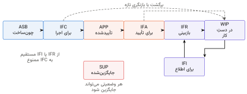
38.2.2 دفترِ اصلیِ مدارک در هفتهٔ ۴۰
ایده. دفترِ اصلیِ مدارک (به انگلیسی master document register) فهرستِ همهٔ تحویلدادنیهای مهندسی است، با شماره، عنوان، بازنگری، وضعیت، مالک، تاریخِ برنامه و ساعتِ بودجه. سازندهای که نقشهای را به کار میبرد، آن را از روی این دفتر برمیدارد. اگر دفتر با مدارک نخواند، ساختگاه با نقشهٔ اشتباه کار میکند:
the master document register at week 40: 120 deliverables
numbers outside the scheme: 2 - PLP-ELX-DWG-0103, PLP-CIV-DWG-12
revision that does not fit the status: 3
PLP-ELE-DWG-0110 rev 1 with status IFR
PLP-ELE-DWG-0122 rev C with status IFC
PLP-ELE-SPC-0101 rev B with status APP
approved or issued without a checker's name: 1 - PLP-GEN-PRO-0102
documents without an owner: 9
each finding goes back to its owner with a date; a register
that is not checked drifts from the documents it lists,
and the drawing a builder uses is the one in the registerمثال 38.1 (پانزده یافته در ۱۲۰ سطر) پرسش. دفترِ ساختگیِ ۱۲۰ تحویلدادنی در هفتهٔ ۴۰ وارسی شده است. چه پیدا شد و با هر یافته چه میشود؟ (دفترِ ساختگی، A-417.)
پاسخ. دو شماره بیرون از نظاماند: یکی رشتهٔ ناشناخته دارد و یکی شمارهٔ کوتاه. سه سند بازنگریای دارند که با وضعیتشان نمیخواند: عدد پیش از تأیید، حرف پس از آن. یک سند بینامِ وارسیکننده تأیید شده است. نُه سند مالک ندارند.
تفسیر. هیچکدام از این یافتهها بهتنهایی فاجعه نیست. اما هر کدام راهی است که یک نقشهٔ نادرست به ساختگاه برسد. شمارهٔ بیرون از نظام در جستوجو پیدا نمیشود. بازنگریِ عددی پیش از تأیید وانمود میکند که تأیید شده است. سندِ بیمالک وقتی تغییر لازم دارد، کسی را ندارد که تغییرش دهد. هر یافته با تاریخ به مالکش برمیگردد و دفتر هر هفته دوباره وارسی میشود. وارسی: \(2 + 3 + 1 + 9 = 15\).
38.2.3 تاریخچهٔ وضعیتها
status histories in the common data environment (A-417)
PLP-ELE-DWG-0105: WIP > IFR > IFA > APP > IFC
PLP-ELE-CAL-0101: WIP > IFR > IFC <- IFR to IFC
PLP-CIV-DWG-0102: WIP > IFR > WIP > IFR > IFA > APP
PLP-CTL-DWG-0103: WIP > IFI > IFC <- IFI to IFC
PLP-MEC-DWG-0100: WIP > IFR > IFA > APP > IFC > ASB
a calculation that went from review straight to 'for
construction' was never approved; a drawing issued 'for
information' was then built from. The workflow tool
blocks both - a register on paper does notایده. دو تاریخچه غیرمجازند. محاسبهای از «بازبینی» مستقیم به «برای اجرا» رفته است، یعنی هرگز تأیید نشده. نقشهای «برای اطلاع» صادر شده و سپس با آن ساختهاند. ابزارِ گردشِ کار (بخش 38.8.1) هر دو را میبندد. دفترِ کاغذی نمیبندد. از این رو این وارسی برای پروژههایی که هنوز ابزار ندارند هم ارزش دارد: تاریخچه را از ایمیلها و برگههای انتقال بازسازی میکند و همین دو الگو را میجوید.
38.2.4 بلوغِ طراحی بر پایهٔ رشته
ایده. بلوغِ طراحی (به انگلیسی design maturity) از وضعیتها خوانده میشود، نه از ساعتهای کارشده. رشتهای که بیشترِ مدارکش «در دستِ کار» است، هنوز آغاز نکرده است. رشتهای که بیشترش «برای بازبینی» است، منتظرِ دیدگاههاست. دو مشکلِ متفاوت با دو چارهٔ متفاوت:
design maturity by discipline at week 40 (counts)
discipline WIP IFR IFA APP IFC share IFC
CIV 7 6 7 0 4 17 %
CTL 8 3 4 0 5 25 %
ELE 21 17 8 3 9 16 %
GEN 1 2 1 0 2 33 %
MEC 3 0 2 0 1 17 %
PRJ 0 2 1 0 1 25 %
planned before week 40 but still WIP or IFR: 23
maturity is read from the statuses, not from the hours
spent; a discipline with many documents in review is
waiting for comments, one with many in WIP has not
started - two different problems with two cures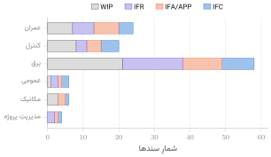
مثال 38.2 (برق: بیشترین مدرک، کمترین سهمِ «برای اجرا») پرسش. در هفتهٔ ۴۰، ۲۳ مدرک که پیش از این هفته برنامهریزی شده بودند هنوز «در دستِ کار» یا «برای بازبینی»اند. رشتهٔ برق ۵۸ مدرک دارد و فقط ۹ تایش «برای اجرا» است. این دربارهٔ برنامه چه میگوید؟
پاسخ. سهمِ «برای اجرا»ی برق ۱۶٪ است. ۲۱ مدرکِ برق در دستِ کار و ۱۷ تا در بازبینیاند.
تفسیر. برق در هر دو صف گیر کرده است: مدارکی که آغاز نشدهاند و مدارکی که منتظرِ دیدگاهاند. برای اولی، منبع یا داده کم است: نقشهٔ تکخطی منتظرِ دادههای فروشنده است. برای دومی، بازبین کم است. چارهٔ اولی خرید و پرسشِ فنی است، چارهٔ دومی برنامهٔ بازبینی. پیشرفتِ ساعتها هیچکدام را نشان نمیدهد (بخش 38.6.2). وارسی: \(9/58 = 0.155\).
38.2.5 چرخههای بازبینی
review cycles of a drawing (teaching shares)
cycle share done days
approved at the first review 55 % 14
approved by the second review 80 % 28
approved by the third review 97 % 42
mean time to approval of those approved in three cycles: 23 days
a schedule that allows one review cycle for every
drawing is late by design; the plan allows two, and the
comment sheet records each comment with its replyایده. فقط کمی بیش از نیمی از نقشهها (۵۵ درصد) در نخستین بازبینی تأیید میشوند. باقی با دیدگاه برمیگردند و دوباره صادر میشوند. برنامهای که برای هر نقشه یک چرخهٔ بازبینی کنار میگذارد، از روزِ نخست عقب است. برنامهٔ نیروگاهِ P دو چرخه کنار میگذارد. برگهٔ دیدگاهها هر دیدگاه را با پاسخش ثبت میکند: پذیرفته، رد با دلیل، یا به پرسشِ فنی سپرده. بازبینیِ طراحی (به انگلیسی design review) هم جلسهای در گامهای کلیدی است، مثلاً ۳۰٪، ۶۰٪ و ۹۰٪ طراحی، که در آن رشتهها و مالک و بهرهبردار طراحی را با هم میبینند (فصل 30).
- سه قاعدهٔ نظامِ مدارکِ فصلِ ۲ را بنویسید.
- بازنگریِ «1» با وضعیتِ IFR چه اشکالی دارد؟
- چرا گذار از IFI به IFC غیرمجاز است؟
- بلوغِ طراحی را از کجا میخوانیم و چرا نه از ساعتها؟
- رشتهای با بیشترِ مدارک در IFR چه مشکلی دارد؟
- اگر ۵۵٪ نقشهها در چرخهٔ اول تأیید شوند، ۱۰۰ نقشه چند بازصدور دارند؟
- برگهٔ دیدگاهها برای هر دیدگاه چه ثبت میکند؟
- سندِ بیمالک چه خطری دارد؟
پاسخها: (۱) الگوی شماره، حرف پیش و عدد پس از تأیید، گذارهای مجاز؛ (۲) وانمود به تأیید میکند؛ (۳) سندِ برای اطلاع هرگز تأیید نشده؛ (۴) از وضعیتها، چون ساعت پیشرفت را نشان نمیدهد؛ (۵) منتظرِ بازبین است؛ (۶) دستکم ۴۵؛ (۷) دیدگاه، پاسخ و تصمیم؛ (۸) تغییرِ لازم را کسی انجام نمیدهد.
38.3 ب. الزامها و کنترلِ رابطها
هر جزءِ نیروگاه از یک زنجیره عبور میکند: الزام، کارکرد، اندازهگذاری، جزئیات، مواد و رواداری، محدودیتهای ساخت، دسترسی برای بازرسی و نگهداری، و سرانجام راستیآزمایی. اگر حلقهای از زنجیره گم شود، آزمونی که شکست میخورد نمیگوید کدام فرض اشتباه بود. این بخش زنجیره را برای اسکیدِ اینورترِ خورشیدی دنبال میکند، سندِ کنترلِ رابطِ آن را با مقدارهای حسابشده پر میکند، و نشان میدهد بازبینیِ «طراحی برای …» چه چیزی را عوض میکند.
38.3.1 از مبنای طراحی تا راستیآزمایی
requirements-to-design flow for the PV inverter skid (teaching)
step content source
design basis 5.0 MVA at 0.6 kV, 45 C, 1,000 m ch 9, D-012
functions convert, protect, control, communicate ch 18
preliminary sizing LV current 4,811 A; transformer 5.6 MVA ch 25
detail skid drawing, cable schedule, settings this chapter
materials, tolerances busbar Cu, bolt torque, IP54 maker
manufacturing limits skid width 2.4 m for road transport ch 31
inspection access front access 1.5 m, IR windows ch 51
verification FAT heat run, SAT power, FRT model ch 44, 50
every step leaves a record the next one cites; the
verification step points back to the design basis, so
a failed test says which assumption was wrongایده. مبنای طراحی (به انگلیسی design basis) عددهای پایه را میگوید: ۵ مگاولتآمپر در ۰٫۶ کیلوولت، دمای ۴۵ درجه، ارتفاعِ هزار متر. کارکردها از ساختارِ شکستِ محصولِ فصلِ ۱۸ میآیند. اندازهگذاری از فصلهای ۹ و ۲۵. جزئیات همین فصل است. مواد و رواداری با سازنده است. محدودیتِ عرضِ اسکید از جادهٔ حمل میآید (فصل 31). دسترسی برای بازرسی از برنامهٔ نگهداری میآید. راستیآزمایی، یعنی آزمونِ گرمای کارخانه، آزمونِ توان در ساختگاه و مدلِ عبور از خطا، به مبنای طراحی برمیگردد. هر گام سابقهای میگذارد که گامِ بعد به آن ارجاع میدهد.
38.3.2 ماتریسِ الزام تا راستیآزمایی
ایده. ماتریسِ الزام تا راستیآزمایی (به انگلیسی requirements verification traceability matrix) برای هر الزام سه پیوند نگه میدارد: کدام سند طراحی آن را برآورده میکند، با چه روشی راستیآزمایی میشود (آزمون، تحلیل، بازرسی، نمایش یا اندازهگیری)، و کدام سابقه شاهدِ آن است. فصلِ ۱۷ دفترِ الزامها را ساخت (فصل 17). این ماتریس آن دفتر را به طراحی و آزمون میدوزد:
def rvtm(requirements, design, verification, evidence) -> dict:
"""Each argument after the first maps a requirement id to its links.
Returns per requirement which stages exist, and the coverage shares."""
rows = {}
for r in requirements:
rows[r] = {"design": bool(design.get(r)),
"verification": bool(verification.get(r)),
"evidence": bool(evidence.get(r))}
n = max(len(rows), 1)
share = {k: sum(v[k] for v in rows.values()) / n
for k in ("design", "verification", "evidence")}
return {"rows": rows, "share": share}
def impacted(graph: dict[str, list[str]], start: str) -> list[str]:
"""Everything reachable downstream of `start` (breadth first), in the
order found; graph maps an item to the items that depend on it."""
seen, order, q = {start}, [], deque([start])
while q:
node = q.popleft()
for nxt in graph.get(node, []):
if nxt not in seen:
seen.add(nxt)
order.append(nxt)
q.append(nxt)
return orderبخشِ ت ماتریس را روی الزامهای نیروگاهِ P اجرا میکند (بخش 38.5.3).
38.3.3 سندِ کنترلِ رابطِ اسکیدِ اینورتر
ایده. اسکیدِ اینورتر با شش چیز مرز دارد: عمران، سمتِ DC، شبکهٔ ۳۳ کیلوولت، کنترل و ارتباط، گرما، و رفتار در شبکه. هر مرز یک یا چند موردِ رابط دارد. هر مورد یک مالک، یک مقدار و دو امضا دارد. مورد تا وقتی هر دو طرف یک مقدار را امضا نکردهاند باز است (فصل 18):
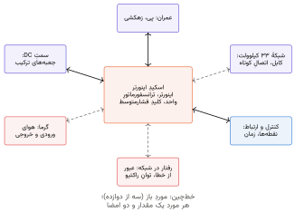
interface-control sheet of the PV inverter skid: values computed
LV current at 5.0 MVA, 0.6 kV: 4,811 A; 8 cables of 620 A per phase
heat rejected at 98.5 % efficiency: 75 kW (with auxiliaries more)
short-circuit current at the skid's RMU: 8.3 kA
(33 kV bus 500 MVA and 0.12 ohm of cable, teaching)
unit transformer impedance seen from 33 kV: 13.6 ohm
items still open on the sheet: 3 of 12
electrical short-circuit level at the RMU owner B
thermal heat rejected at full load, 45 C owner A
grid fault ride-through and reactive capability owner A
an interface is closed when both owners sign one value;
until then the item is open, and the drawing that needs
it carries a hold (ch 18, interface register)مثال 38.3 (سه موردِ باز و مقدارهایشان) پرسش. برای سندِ کنترلِ رابطِ اسکید، جریانِ فشارضعیف، شمارِ کابلهای موازی، گرمای دفعشده و جریانِ اتصالِ کوتاه در کلیدِ فشارمتوسطِ اسکید را حساب کنید. کدام موردها هنوز باز است؟ (مقدارهای آموزشی، A-419.)
پاسخ.
\[ I_\text{LV} = \frac{5\,000\,\text{kVA}}{\sqrt{3} \times 0.6\,\text{kV}} = 4\,811\,\text{A}, \qquad n = \left\lceil \frac{4\,811}{620} \right\rceil = 8 \]
گرما در بازدهِ ۹۸٫۵٪: \(5\,000 \times 0.015 = 75\,\text{kW}\). جریانِ اتصالِ کوتاه در کلیدِ اسکید، با شینهٔ ۵۰۰ مگاولتآمپری و ۰٫۱۲ اهم کابل: \(8.3\,\text{kA}\). سه مورد باز است: سطحِ اتصالِ کوتاه، گرمای دفعشده و رفتار در شبکه.
تفسیر. عددهای حسابشده تا وقتی دو طرف امضا نکردهاند فقط پیشنهادند. سازنده باید گرمای واقعی را با مصرفِ کمکی بدهد. پیمانکار باید سطحِ اتصالِ کوتاه را از مطالعهٔ فصلِ ۲۶ بدهد. نقشهای که به این مقدارها نیاز دارد، مثلاً تهویهٔ اسکید یا انتخابِ کلید، یک «نگهدار» (به انگلیسی hold) روی خود دارد تا مورد بسته شود. وارسی: \(33^2/500 = 2.18\,\Omega\) و \(33/(\sqrt{3} \times 2.30) = 8.3\,\text{kA}\).
38.3.4 طراحی برای ساخت، مونتاژ، آزمون و نگهداری
design-for-X review of the inverter skid (teaching outcomes)
for change result
manufacture one busbar size instead of three parts 31 -> 22
assembly cable entry from below, no rear access skid 0.6 m narrower
test test terminals for CT and VT circuits FAT 2 days -> 1
maintenance fans replaceable from the front fan 4 h -> 1 h
transport skid within road width 2.4 m no escort (ch 31)
24 fan changes a year x 3 h saved = 72 hours of inverter downtime
avoided
each review is held while the design can still change, with
the maker, the installer and the operator in the room;
their findings go into the design basis, not into a
later deviationایده. طراحی برای ساخت قطعهها را کم و یکسان میکند. طراحی برای مونتاژ راهِ ورودِ کابل و دسترسیِ ابزار را میاندیشد. طراحی برای آزمون پایانههای آزمون را در جای دسترس میگذارد. طراحی برای نگهداری قطعههای پرتعویض را از جلو قابلِ تعویض میکند. هر بازبینی وقتی برگزار میشود که طراحی هنوز تغییرپذیر است، با سازنده، نصاب و بهرهبردار. یافتههایش به مبنای طراحی میروند، نه به یک عدولِ بعدی (به انگلیسی deviation). اینجا ۲۴ تعویضِ پروانه در سال، هر کدام سه ساعت کوتاهتر، ۷۲ ساعت ازکارافتادگیِ اینورتر را حذف میکند (بخش 37.7.5).
- هشت گامِ زنجیرهٔ الزام تا راستیآزمایی را بنویسید.
- ماتریسِ الزام تا راستیآزمایی برای هر الزام چه سه پیوندی نگه میدارد؟
- پنج روشِ راستیآزمایی را نام ببرید.
- اسکیدِ 4 MVA در 0.6 kV: جریانِ فشارضعیف چقدر است؟
- گرمای اسکیدِ 4 MVA با بازدهِ ۹۸٪؟
- موردِ رابط کِی بسته است؟
- «نگهدار» روی یک نقشه یعنی چه؟
- چرا بازبینیِ «طراحی برای …» باید زود برگزار شود؟
پاسخها: (۱) مبنا، کارکرد، اندازهگذاری، جزئیات، مواد و رواداری، محدودیتِ ساخت، دسترسی، راستیآزمایی؛ (۲) سندِ طراحی، روشِ راستیآزمایی، شاهد؛ (۳) آزمون، تحلیل، بازرسی، نمایش، اندازهگیری؛ (۴) 3,849 A؛ (۵) 80 kW؛ (۶) وقتی هر دو مالک یک مقدار را امضا کنند؛ (۷) بخشی که به مقدارِ باز وابسته است صادر نمیشود؛ (۸) تا یافتهها به مبنای طراحی بروند، نه به عدول.
38.3.5 نگارشِ الزام: آنچه وارسیپذیر نیست بسته نمیشود
ماتریسِ الزام تا راستیآزمایی فقط الزامی را میبندد که بشود آزمودش. پس کیفیتِ هر الزام از نگارشش شروع میشود. یک برنامهٔ کوچک ده جملهٔ الزام را با چهار قاعدهٔ ساده وارسی میکند. واژهٔ مبهم آزمونی ندارد. عددِ بییکا مرزی ندارد. جملهٔ بی «باید» آرزوست. چند «باید» در یک سطر یعنی چند الزام زیرِ یک شناسه. جملهها ساختگیاند (A-424).
VAGUE = ["adequate", "as required", "if possible", "approximately",
"etc", "user-friendly", "sufficient", "as appropriate"]
UNIT = re.compile(r"\d[\d.,]*\s*(%|MW|MVAr|kV|ms|s|h|A|dB|years?|m3)\b")
def wording(text: str) -> list[str]:
"""Problems in one requirement statement."""
t = text.lower()
out = [f"vague: '{w}'" for w in VAGUE if re.search(rf"\b{w}\b", t)]
if t.count(" shall ") > 1:
out.append(f"{t.count(' shall ')} requirements in one")
if re.search(r"\d", t) and not UNIT.search(text):
out.append("number without a unit")
if " shall " not in f" {t} ":
out.append("no 'shall': a wish, not a requirement")
return outwording of ten requirement statements
R-01 ok
R-02 vague: 'adequate'
R-03 ok
R-04 number without a unit; no 'shall': a wish, not a requirement
R-05 3 requirements in one
R-06 vague: 'approximately'
R-07 vague: 'as required'
R-08 ok
R-09 vague: 'user-friendly'
R-10 ok
statements with a problem: 6 of 10
a requirement that cannot be verified cannot be closed in
the RVTM: 'adequate' has no test; 'approximately 45 dB'
has no limit; three 'shall's in one line need three IDsمثال 38.4 («کافی» آزمون ندارد) پرسش. از ده جملهٔ الزام، کدامها را نمیشود در ماتریس بست؟ هر کدام را چگونه بازنویسی میکنید؟
پاسخ. شش جمله مشکل دارند. R-02 «کافی» است و باید عددی بگیرد، مثلاً «۴ ساعت بارِ ضروری» از فصلِ ۲۳. R-04 عدد را بییکا آورده و «باید» ندارد. R-05 سه الزام را در یک سطر گذاشته است و سه شناسه لازم دارد. R-06 «حدود» دارد و حد ندارد. R-07 «به اندازهٔ لازم» دارد و باید به مقدار و روشِ فصلِ ۲۶ ارجاع دهد. R-09 «کاربرپسند» است و باید به معیارِ سنجشپذیری بدل شود، مثلاً زمانِ تعویضِ یک جزء.
تفسیر. قاعدهها سادهاند و جای داوریِ مهندس را نمیگیرند. جملهٔ R-01 از هر چهار قاعده میگذرد، اما هنوز باید بگوید سقف در چه بازهٔ زمانی و با کدام اندازهگیری سنجیده میشود. با این حال، قاعدهها نیمی از جملهها را پیش از رسیدن به بازبینی میگیرند. الزامی که نگارشش اصلاح شود، در ماتریس روشِ راستیآزمایی و شاهد میگیرد (بخش 38.3.2). وارسی: شش سطر در خروجی مشکل دارند.
38.4 پ. نظامِ نقشههای مهندسی
نقشه زبانِ مشترکِ طراح، سازنده، نصاب و بهرهبردار است. هر نوعِ نقشه یک پرسش را جواب میدهد و پرسشهای دیگر را نه. اشتباهِ رایج این است که نقشهای برای پرسشی به کار رود که پاسخش را ندارد: نمودارِ تکخطی برای سیمکشی، یا نقشهٔ سیمکشی برای شبکه. این بخش شانزده نوعِ نقشه را با پرسشِ هر کدام و منبعشان میآورد، سه نقشهٔ پیوستهٔ یک زیرسامانه را کنارِ هم میگذارد، و وارسیهایی را نشان میدهد که ابهام را پیش از ساختگاه میگیرند.
38.4.1 شانزده نقشه و پرسشِ هر کدام
sixteen drawing types and the one question each answers
drawing answers source
concept block diagram which functions and flows architecture
energy-flow diagram where energy goes, is lost yield model
site layout where everything stands GIS
one-line diagram how power is connected network model
circuit schematic how one circuit works design tool
wiring / termination which wire to which terminal cable database
grounding layout earth conductors, joints earthing study
protection zones which relay covers what settings
control architecture who commands what control design
physical network cables, ports, switches network database
logical network subnets, flows, services network database
zones and conduits allowed paths between zones security design
panel arrangement where devices sit panel design
assembly / exploded how parts fit together 3D model
fabrication drawing how one part is made 3D model
as-built drawing what was actually built redlines, survey
a one-line says how power is connected, not which wire
goes where; a wiring diagram says which wire, not how the
network is built - none can stand in for anotherایده. ستونِ آخر منبعِ هر نقشه است: مدلی که نقشه از آن ساخته میشود. نمودارِ تکخطیِ نیروگاهِ P از مدلِ شبکهٔ فصلِ ۲۳ میآید (فصل 23). نقشهٔ سیمکشی از پایگاهِ دادهٔ کابل. توپولوژیِ شبکه از پایگاهِ دادهٔ شبکهٔ فصلِ ۳۵. اگر نقشه دستی و بیمنبع کشیده شود، با هر تغییرِ مدل از آن عقب میماند. نقشهٔ چونساخت منبعِ دیگری دارد: خطقرمزهای میدانی (به انگلیسی redlines) که نصاب روی نقشهٔ اجرایی میکشد، و نقشهبرداری. سه نکته را باید تکرار کرد: نمودارِ تکخطی نقشهٔ سیمکشی نیست، و هیچکدام جای نقشهٔ توپولوژیِ شبکه را نمیگیرند. ناحیهها و مجراها هم نقشهٔ خودشان را دارند (فصل 36).
38.4.2 سه نقشهٔ پیوستهٔ یک زیرسامانه
ایده. بلوکِ خورشیدیِ PVF2-3 در سه نقشه دیده میشود. نمودارِ تکخطی میگوید توان چگونه از اینورتر به شینه میرسد. نقشهٔ کنترل میگوید چه کسی به اینورتر فرمان میدهد. نقشهٔ شبکه میگوید فرمان از کدام درگاه و سوئیچ میگذرد. برچسبِ هر جزء در هر سه یکی است. این برچسبها همان برچسبهای فصلِ ۲۳ و دستهٔ IEC 81346 هستند (STD-094):
PV block PVF2-3 in three linked drawings (tags shared, teaching)
tag drawing shows links to
=PVF2-Q1 one-line feeder breaker 630 A protection zone Z-PVF2
=PVF2-3-T1 one-line unit transformer 5.6 MVA zone Z-PVF2-3
=PVF2-3-U1 control inverter, set points P, Q port SW-PV2:7
SW-PV2 network field switch, PV ring 2 zone field-pv
PPC control plant controller control zone
the same tag appears in every drawing that shows the item;
each drawing lists the drawings it continues on, with
their revision. The one-line shows the breaker, the
control drawing the command, the network drawing the
port the command travels through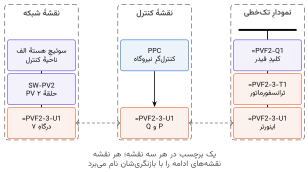
مثال 38.5 (فرمانی که از سه نقشه میگذرد) پرسش. اپراتور توانِ راکتیوِ اینورترِ PVF2-3 را تغییر میدهد و اینورتر واکنش نمیدهد. برای پیدا کردنِ علت به کدام نقشهها نیاز است؟
پاسخ. به هر سه. نقشهٔ کنترل میگوید فرمان از کنترلگرِ نیروگاه به اینورتر میرود. نقشهٔ شبکه میگوید از کدام سوئیچ و درگاه میگذرد: SW-PV2، درگاهِ ۷. نمودارِ تکخطی میگوید اینورتر اصلاً برق دارد یا کلیدِ فیدرش باز است.
تفسیر. هیچکدام بهتنهایی کافی نیست. چون برچسب در هر سه یکی است، تکنسین از یکی به دیگری میرود بیآنکه حدس بزند. نمودارِ تکخطی ترانسفورماتور را ۵٫۶ مگاولتآمپر نشان میدهد. این پس از تغییرِ C-017 است (بخش 38.5.4). هر نقشه بازنگریِ نقشههای ادامهاش را نام میبرد، تا تغییر در یکی، دیگری را عقب نگذارد. وارسی: برچسبِ =PVF2-3-U1 در هر سه هست.
38.4.3 جدولِ عنوان و ارجاعها
title-block and reference check of five drawings (planted gaps)
drawing missing
one-line -
wiring B07 scale
network ring 2 legend, references
foundation B07 revision, checker
panel PPC references
6 gaps in five drawings; a drawing without a revision
cannot be matched to the register, one without a legend
makes its reader guess what a symbol means, one without
continuation references leaves a line that ends nowhereایده. هر نقشه یک جدولِ عنوان دارد: شماره، بازنگری، وضعیت، مقیاس، تهیهکننده، وارسیکننده و تأییدکننده. هر نقشه یک راهنمای نمادها دارد، یا به برگهٔ نمادها ارجاع میدهد (فصل 23). هر خطی که به لبهٔ برگ میرسد، به نقشهٔ ادامه با شماره و بازنگری ارجاع میدهد. اینجا پنج نقشه هفت کمبود دارند. نقشهٔ بیبازنگری را نمیشود با دفتر تطبیق داد. نقشهٔ بیراهنما خواننده را وادار میکند معنای نماد را حدس بزند. نقشهٔ بیارجاع خطی دارد که به هیچجا نمیرسد. استانداردِ تهیهٔ مدارکِ برقی (STD-111) این قاعدهها را شرح میدهد.
38.4.4 ابهامهای رایج
six common ambiguities and the question each leaves
ambiguity question
'see detail' without the drawing number which detail?
a tag that differs by one character two items or one?
'existing' without a survey date existing when?
units missing on a dimension mm or m?
a cloud with no revision triangle which change?
'by others' without naming the party nobody's scope
each one costs a technical query, a site stop or a wrong
installation; the checker's list asks for each by nameایده. هر ابهام یک پرسشِ فنی (به انگلیسی technical query) میسازد، یا یک توقف در ساختگاه، یا یک نصبِ اشتباه. «به عهدهٔ دیگران» بینامِ طرف، کاری را در هیچ قراردادی نمیگذارد. ابری بیمثلثِ بازنگری نمیگوید کدام تغییر است. فهرستِ وارسیکننده هر کدام را به نام میپرسد. وارسیِ مستقل (بخش 38.6.6) با همین فهرست کار میکند.
- نمودارِ تکخطی چه پرسشی را جواب میدهد و چه پرسشی را نه؟
- منبعِ نقشهٔ چونساخت چیست؟
- چرا نقشهٔ دستیِ بیمنبع از مدل عقب میماند؟
- برای پیدا کردنِ علتِ بیپاسخیِ یک اینورتر به کدام نقشهها نیاز است؟
- جدولِ عنوان چه فیلدهایی دارد؟
- چرا هر نقشه بازنگریِ نقشههای ادامه را نام میبرد؟
- «به عهدهٔ دیگران» چه خطری دارد؟
- کدام نقشه ناحیهها و مجراهای امنیتی را نشان میدهد؟
پاسخها: (۱) اتصالِ توان، نه سیمکشی یا شبکه؛ (۲) خطقرمزهای میدانی و نقشهبرداری؛ (۳) با تغییرِ مدل بهروز نمیشود؛ (۴) کنترل، شبکه و تکخطی؛ (۵) شماره، بازنگری، وضعیت، مقیاس، تهیهکننده، وارسیکننده، تأییدکننده؛ (۶) تا تغییر در یکی دیگری را عقب نگذارد؛ (۷) کار در هیچ قراردادی نمیماند؛ (۸) نقشهٔ ناحیه و مجرا.
38.4.5 تفاوتِ دو بازنگری و یادداشتِ هر تغییر
جدولِ بازنگریِ هر نقشه یا فهرست میگوید چه چیزی تغییر کرده است. اما فقط آنچه را میگوید که نویسنده به یاد آورده است. برنامهٔ کوچکی دو بازنگریِ فهرستِ کابلها را سطر به سطر مقایسه میکند: سطرهای افزوده، سطرهای حذفشده و مقدارهای تغییرکرده. سپس وارسی میکند که هر تغییر یادداشتِ بازنگری دارد یا نه.
cable schedule rev 1 -> rev 2: every change and its note
=PVF2-W2 240 mm2 1.10 km -> 300 mm2 1.10 km
note: C-021 larger section after the cable study
=PVF2-W3 185 mm2 0.70 km -> 185 mm2 0.75 km
note: NONE
=WS1-W2 removed
note: NONE
=WS3-W1 added
note: C-022 feeder WS3 added
changes 4; without a revision note: =PVF2-W3, =WS1-W2
a silent change is the dangerous one: =PVF2-W3 grew by
50 m and =WS1-W2 vanished, and no reader of the revision
table would know; the diff is run before every issueمثال 38.6 (پنجاه متری که کسی ننوشت) پرسش. بازنگریِ ۲ فهرستِ کابلها دو یادداشت دارد. مقایسه چند تغییر پیدا میکند و کدامها بییادداشتاند؟
پاسخ. چهار تغییر. =PVF2-W2 بزرگتر شده است (C-021) و =WS3-W1 افزوده شده است (C-022). دو تغییر بییادداشتاند. =PVF2-W3 ۵۰ متر بلندتر شده است و =WS1-W2 از فهرست حذف شده است.
تفسیر. تغییرِ بییادداشت خطرناکترین تغییر است، چون خوانندهٔ جدولِ بازنگری از آن خبر ندارد. ۵۰ متر بیشتر افتِ ولتاژ و جریانِ اتصالِ کوتاه را تغییر میدهد (فصل 24). سطرِ حذفشده ممکن است کابلی باشد که هنوز در نقشهٔ تکخطی هست (بخش 38.5.1). مقایسه پیش از هر صدور اجرا میشود، و هر سطرِ تغییرکرده یا یادداشت میگیرد یا به وضعِ قبلی برمیگردد. این همان قاعدهٔ «هر تغییر از مسیرِ تغییر» است، که این بار با ماشین وارسی میشود. وارسی: \(5 + 1 - 1 = 5\) سطر در بازنگریِ ۲.
38.5 ت. آزمایشگاهِ یکپارچهٔ کنترلِ مدارک
این آزمایشگاه مثالهای کارشدهٔ اصلیِ فصل را در یک جریان میآورد: ناسازگاریهای میانِ مدارکِ پیوسته پیدا میشوند، ارجاعهایی که بازنگریِ کهنه را به کار بردهاند شناخته میشوند، ماتریسِ الزام تا راستیآزمایی ساخته میشود، و یک تغییرِ کنترلشده از درخواست تا وضعیتِ چونساخت دنبال میشود. همه روی دفترهای ساختگی است.
پرونده: companion/ch38/lab_d.py
38.5.1 گامِ ۱: ناسازگاری میانِ مدارکِ پیوسته
ایده. نمودارِ تکخطی، فهرستِ تجهیزات، جدولِ کابلها و پروندهٔ تنظیمِ رلهها همه ردیفهایی با برچسبِ مشترک دارند. اگر هر کدام جداگانه بهروز شود، از هم دور میشوند. وارسی، هر جفت را روی برچسبهای مشترک مقایسه میکند:
def crosscheck():
"""All disagreements between the linked registers, as (pair, tag,
field, first value, second value)."""
pairs = [("one-line / equipment list", src.ONE_LINE, src.EQUIPMENT,
["a", "ka", "mva", "vector"]),
("one-line / cable schedule", {k: v for k, v in src.ONE_LINE.items()
if "-W" in k}, src.CABLES,
["mm2", "km"]),
("settings / CT data sheets", src.PROTECTION, src.CT_LIST, ["ct"])]
out = []
for name, a, b, fields in pairs:
common = {t: a[t] for t in a if t in b}
for tag, f, x, y in dc.mismatches(common, {t: b[t] for t in common}, fields):
if x is not None or y is not None:
out.append((name, tag, f, x, y))
return outlinked registers checked against each other (planted, A-418)
pair tag field first second
one-line / equipment list =PVF2-3-T1 mva 5.5 5.0
one-line / equipment list =T1-Q2 a 1600 1250
one-line / equipment list =WS1-2-T1 vector Dyn11 Dyn5
one-line / cable schedule =PVF2-W1 km 0.6 0.9
settings / CT data sheets =PVF2-Q1 ct 800 600
5 disagreements; who is right is a rule, not a vote:
ratings come from the approved one-line (rev 2 carries the
1,600 A incomers of ch 26), CT ratios from the switchgear
data sheets, lengths from the route survey. Each finding
becomes a correction of the other document, with a new
revisionمثال 38.7 (پنج ناسازگاری و یک قاعده برای هر کدام (مثالِ کارشده)) پرسش. چهار سندِ پیوسته روی برچسبهای مشترک مقایسه شدهاند. کدام مقدار درست است و کدام سند اصلاح میشود؟ (دفترهای ساختگی، A-418.)
پاسخ.
| برچسب | ناسازگاری | منبعِ درست | اصلاحِ |
|---|---|---|---|
| =T1-Q2 | ۱٬۶۰۰ در برابرِ ۱٬۲۵۰ آمپر | تکخطیِ تأییدشده (فصلِ ۲۶) | فهرستِ تجهیزات |
| =PVF2-3-T1 | ۵٫۵ در برابرِ ۵٫۰ مگاولتآمپر | تکخطی، سپس تغییرِ C-017 | فهرستِ تجهیزات |
| =WS1-2-T1 | Dyn11 در برابرِ Dyn5 | برگهٔ دادهٔ سازنده | هر کدام که با برگه نخواند |
| =PVF2-W1 | ۰٫۶ در برابرِ ۰٫۹ کیلومتر | نقشهبرداریِ مسیر | تکخطی یا جدولِ کابل |
| =PVF2-Q1 | نسبتِ ۸۰۰ در برابرِ ۶۰۰ | برگهٔ دادهٔ کلید | پروندهٔ تنظیم |
تفسیر. درستی با رأی تعیین نمیشود، با قاعده. هر مقدار یک مبدأِ معتبر (به انگلیسی source of truth، بخش 35.7.2) دارد که پیشتر تعیین شده است: نسبتِ ترانسفورماتورِ جریان از برگهٔ دادهٔ کلید، طول از نقشهبرداری، رتبهبندی از تکخطیِ تأییدشده. بدترین ناسازگاری، نسبتِ ترانسفورماتورِ جریان است. رلهای که با نسبتِ ۸۰۰ تنظیم شده و ترانسفورماتورِ جریانِ ۶۰۰ دارد، جریان را ۳۳٪ بیشتر از واقع میخوانَد. زودتر از آنچه مطالعه گفته قطع میکند و هماهنگی با رلههای بالادست به هم میخورد (فصل 26). طولِ کابل هم افتِ ولتاژ و توانِ شارژ را عوض میکند (فصل 24). هر اصلاح بازنگریِ تازهٔ سند است. وارسی: \(800/600 = 1.33\).
38.5.2 گامِ ۲: ارجاعهای کهنه
ایده. هر ارجاع بازنگریای را که به کار برده نگه میدارد. وقتی سندِ مقصد بازنگریِ تازه میگیرد، همهٔ ارجاعهایی که بازنگریِ قدیم را دارند، باید دوباره نگاه شوند:
def stale_references(current: dict[str, str], refs) -> list[tuple]:
"""refs: (from_id, to_id, rev_used). Returns the links whose revision
is not the current one of the document they point to, or whose
target is missing from the register."""
out = []
for src, dst, rev in refs:
cur = current.get(dst)
if cur is None or cur != rev:
out.append((src, dst, rev, cur))
return out
def completeness(records, required) -> tuple[float, dict]:
"""Share of required fields filled over all records, and the missing
fields per record id."""
missing, filled, total = {}, 0, 0
for r in records:
gaps = [f for f in required if r.get(f) in (None, "", [])]
filled += len(required) - len(gaps)
total += len(required)
if gaps:
missing[r["id"]] = gaps
return (filled / total if total else 1.0), missing
def mismatches(a: dict, b: dict, fields, rel_tol: float = 0.0) -> list[tuple]:
"""Compare two registers keyed by tag: (tag, field, a value, b value)
for tags in one only, and fields that differ (numbers within rel_tol
count as equal)."""
out = []
for tag in sorted(set(a) | set(b)):
if tag not in a or tag not in b:
out.append((tag, "missing", tag in a, tag in b))
continue
for f in fields:
x, y = a[tag].get(f), b[tag].get(f)
if isinstance(x, (int, float)) and isinstance(y, (int, float)):
if not math.isclose(x, y, rel_tol=rel_tol, abs_tol=0.0):
out.append((tag, f, x, y))
elif x != y:
out.append((tag, f, x, y))
return outcross-references that use an old revision or a missing document
from to rev used current
PLP-ELE-CAL-0011 PLP-ELE-DWG-0005 1 2
PLP-CTL-DWG-0001 PLP-CTL-LST-0001 1 2
PLP-CIV-DWG-0101 PLP-ELE-DWG-0009 0 None
the protection study was made on one-line rev 1, before the
incomers were raised - its results must be re-checked; the
network drawing lists points from an old I/O list; the
foundation drawing cites a drawing the register does not
know. A link carries the revision it used, so a new
revision shows who must look againایده. مطالعهٔ حفاظت روی بازنگریِ ۱ تکخطی انجام شده است، پیش از آنکه کلیدهای ورودی ۱٬۶۰۰ آمپر شوند. نتیجههایش دوباره وارسی میشوند. نقشهٔ شبکه نقطهها را از فهرستِ ورودی و خروجیِ قدیمی برداشته است. نقشهٔ پی به نقشهای ارجاع میدهد که دفتر آن را نمیشناسد. ارجاعِ بیبازنگری این یافتهها را ممکن نمیکرد.
38.5.3 گامِ ۳: ماتریسِ الزام تا راستیآزمایی
requirements-to-verification matrix, detailed design (A-418)
requirement design verification evidence text
REQ-001 yes test - export cap 100 MW at POC
REQ-004 yes analysis - reactive capability at POC
REQ-G03 yes test - fault ride-through
REQ-G07 yes measurement - power quality emissions
REQ-S01 yes test - frequency service
REQ-007 yes test - auxiliary autonomy 4 h
REQ-009 yes inspection - SCADA retention 10 years
REQ-010 NO inspection - fire detection, BESS area
REQ-011 yes - - noise at the camp
REQ-012 NO - - water use within permit
REQ-003 yes test yes time stamps to 1 ms
REQ-002 yes test yes protection clearing time
covered: design 83 %, verification method 83 %, evidence 17 %
at detailed design, missing evidence is normal - it comes
from FAT, SAT and commissioning (ch 48, 50); a requirement
without a design document or without a verification
method is not normal: fire detection and water use have
no design owner yet, noise and water no methodمثال 38.8 (الزامهایی که هنوز مالک یا روش ندارند (مثالِ کارشده)) پرسش. ماتریسِ دوازده الزامِ نیروگاهِ P در طراحیِ تفصیلی چه پوششی دارد؟ کدام کمبودها عادیاند و کدام نه؟
پاسخ. پوششِ طراحی ۸۳٪، روشِ راستیآزمایی ۸۳٪ و شاهد ۱۷٪.
تفسیر. کمبودِ شاهد در این مرحله عادی است. شاهد از آزمونِ کارخانه، آزمونِ ساختگاه و راهاندازی میآید (فصل 48، فصل 50). کمبودِ سندِ طراحی یا روشِ راستیآزمایی عادی نیست. تشخیصِ حریق در محوطهٔ باتری و مصرفِ آب هنوز مالکِ طراحی ندارند. نوفه و آب هنوز روشِ راستیآزمایی ندارند. هیچ سندی که به این الزامها وابسته است، «برای اجرا» صادر نمیشود تا این کمبودها بسته شوند. وارسی: \(10/12 = 0.83\) و \(2/12 = 0.17\).
38.5.4 گامِ ۴: تغییرِ کنترلشده تا چونساخت
ایده. فصلِ ۲۵ نشان داد ترانسفورماتورِ واحدِ خورشیدی ۱٪ کوچک است. درخواستِ تغییرِ C-017 آن را از ۵٫۵ به ۵٫۶ مگاولتآمپر میبرد. گرافِ وابستگیها میگوید این تغییر به کدام مدارک میرسد:
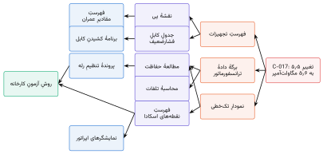
change C-017: PV unit transformers 5.5 -> 5.6 MVA (ch 25 finding)
documents touched, in order of the dependency graph (13):
1 equipment list 4 h
2 transformer data sheet 6 h
3 one-line diagram 6 h
4 skid foundation drawing 16 h
5 LV cable schedule 8 h
6 protection study 24 h
7 losses calculation 6 h
8 SCADA point list 4 h
9 civil bill of quantities 6 h
10 cable pulling plan 4 h
11 relay settings file 8 h
12 HMI displays 4 h
13 FAT procedure 6 h
rework 102 engineering hours before the first purchase order
the change request names the reason, the documents, the
hours and the date; each document gets a new revision
that cites C-017; after construction the as-built set
shows what was built, and the change log closes when the
last as-built revision is issuedمثال 38.9 (یک عدد، سیزده سند) پرسش. تغییرِ رتبهٔ ترانسفورماتورِ واحد به کدام مدارک میرسد و چند ساعت بازکاری میخواهد؟ تغییر کِی بسته میشود؟
پاسخ. سیزده سند، از فهرستِ تجهیزات تا روشِ آزمونِ کارخانه، با ۱۰۲ ساعتِ مهندسی.
تفسیر. مطالعهٔ حفاظت بزرگترین سهم را دارد، ۲۴ ساعت، چون جریانِ هجومی و اتصالِ کوتاه عوض میشوند. روشِ آزمونِ کارخانه از دو راه میرسد: از پروندهٔ تنظیم و از فهرستِ نقطهها. پیمایشِ عرضاول هر سند را یک بار میشمارد. هر سند بازنگریِ تازهای میگیرد که به C-017 ارجاع میدهد. پس از ساخت، مجموعهٔ چونساخت آنچه را ساخته شد نشان میدهد. دفترِ تغییرها وقتی بسته میشود که آخرین بازنگریِ چونساخت صادر شود. بخشِ ث هزینه و برنامهٔ همین تغییر را میسنجد (بخش 38.6.4). وارسی: جمعِ ساعتهای جدول ۱۰۲ است.
- چهار سندی که روی برچسبهای مشترک مقایسه شدند کداماند؟
- مبدأِ معتبرِ نسبتِ ترانسفورماتورِ جریان چیست؟
- رلهای که با نسبتِ ۸۰۰ تنظیم شده ولی ترانسفورماتورِ جریانِ ۶۰۰ دارد، جریان را چگونه میخوانَد؟
- چرا ارجاع باید بازنگری را نگه دارد؟
- کدام کمبودِ ماتریس در طراحیِ تفصیلی عادی است؟
- تغییرِ C-017 به چند سند میرسد؟
- دفترِ تغییرها کِی بسته میشود؟
- چرا روشِ آزمونِ کارخانه دو بار در گراف دیده میشود ولی یک بار شمرده میشود؟
پاسخها: (۱) تکخطی، فهرستِ تجهیزات، جدولِ کابل، پروندهٔ تنظیم؛ (۲) برگهٔ دادهٔ کلید؛ (۳) 33 % بیشتر از واقع؛ (۴) تا بازنگریِ تازه بگوید چه کسی باید دوباره نگاه کند؛ (۵) شاهد؛ (۶) سیزده؛ (۷) با صدورِ آخرین بازنگریِ چونساخت؛ (۸) پیمایشِ عرضاول هر گره را یک بار میشمارد.
38.6 ث. کنترلِ پروژه و حکمرانیِ فنی
مهندسیِ تفصیلی یک پروژه در دلِ پروژه است: محدوده، برنامه، هزینه، ریسک و تصمیم دارد. فصلِ ۲۲ مسیرِ بحرانی، ردهٔ برآوردِ هزینه و دفترِ ریسک را برای توسعه ساخت (فصل 22). این بخش همان ابزارها را روی تحویلدادنیهای مهندسی میآورد: پیشرفت با ارزشِ کسبشده، پرسشهای فنی با سنِ هر کدام، تغییر با اثرِ هزینه و برنامه، تصمیم با سابقهاش، و وارسیِ مستقل با احتمالِ یافتنِ خطا.
38.6.1 ساختارِ شکستِ کار و خطمبنای محدوده
ایده. ساختارِ شکستِ کار (به انگلیسی work breakdown structure) کارِ مهندسی را به بستههایی میشکند که هر کدام مالک، بودجهٔ ساعت و تحویلدادنی دارد. در نیروگاهِ P شکستِ کار از همان ساختارِ شکستِ محصولِ فصلِ ۱۸ پیروی میکند: هر جزءِ محصول بستهای از نقشه، محاسبه و مشخصه دارد (فصل 18). خطمبنای محدوده فهرستِ همین بستههاست در لحظهٔ آغاز. هر کارِ تازهای که در آن نیست، یک تغییر است، نه «بخشی از همان کار».
38.6.2 پیشرفت با ارزشِ کسبشده
ایده. پیشرفت با ساعتهای کارشده سنجیده نمیشود. ساعتِ کارشده هزینه است، نه دستاورد. ارزشِ کسبشده (به انگلیسی earned value) برای هر سند سهمی از بودجهاش را بر پایهٔ وضعیتش اعتبار میدهد. این همان قاعدههای اعتبارِ پیشرفت است: «برای بازبینی» ۳۰٪، «برای تأیید» ۶۰٪، «برای اجرا» ۹۰٪ و «چونساخت» ۱۰۰٪. سه عدد کنارِ هم میآیند: ارزشِ برنامهریزیشده (PV)، ارزشِ کسبشده (EV) و هزینهٔ واقعی (AC):
\[ \text{SPI} = \frac{\text{EV}}{\text{PV}}, \qquad \text{CPI} = \frac{\text{EV}}{\text{AC}}, \qquad \text{EAC} = \frac{\text{BAC}}{\text{CPI}} \tag{38.1}\]
def earned_value(pv: float, ev: float, ac: float, bac: float) -> dict:
"""Schedule and cost performance of engineering hours: SPI = EV/PV,
CPI = EV/AC, estimate at completion = BAC/CPI."""
spi, cpi = ev / pv, ev / ac
return {"spi": spi, "cpi": cpi, "eac": bac / cpi, "vac": bac - bac / cpi}
def ageing(open_days, edges=(7, 14, 30, 60)) -> dict[str, int]:
"""Open items by age bucket (days)."""
out, lo = {}, 0
for e in edges:
out[f"{lo}-{e}"] = sum(1 for d in open_days if lo <= d < e)
lo = e
out[f">={lo}"] = sum(1 for d in open_days if d >= lo)
return out
def detect_chance(n_items: int, k_errors: int, sample: int) -> float:
"""Chance that checking `sample` of n_items (without replacement)
finds at least one of k_errors (hypergeometric)."""
if k_errors <= 0:
return 0.0
if sample >= n_items:
return 1.0
miss = math.comb(n_items - k_errors, sample) / math.comb(n_items, sample)
return 1.0 - miss
def handover_score(items: dict[str, tuple[float, float]]) -> float:
"""items: name -> (weight, share complete 0..1). Weighted score."""
w = sum(v[0] for v in items.values())
return sum(v[0] * v[1] for v in items.values()) / wearned value of the engineering at week 40 (hours, synthetic)
budget at completion 7,342 h; planned value 4,451 h
earned value 3,012 h (credit by status: IFR 30 %, IFA 60 %, IFC 90 %)
actual hours 3,553 h
SPI 0.68, CPI 0.85; estimate at completion 8,661 h
the design is behind its plan and costs more than planned
for what it has earned; credit only by status keeps the
progress honest - a drawing 'nearly finished' earns
nothing more until it is issued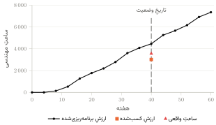
مثال 38.10 (عقبتر و گرانتر) پرسش. در هفتهٔ ۴۰، ارزشِ برنامهریزیشده ۴٬۴۵۱ ساعت، ارزشِ کسبشده ۳٬۰۱۲ ساعت و ساعتِ واقعی ۳٬۵۵۳ است. بودجهٔ کل ۷٬۳۴۲ ساعت است. SPI، CPI و برآورد در پایان را حساب کنید. (دفترِ ساختگی.)
پاسخ. \(\text{SPI} = 3\,012/4\,451 = 0.68\)، \(\text{CPI} = 3\,012/3\,553 = 0.85\) و \(\text{EAC} = 7\,342/0.85 = 8\,661\,\text{h}\).
تفسیر. طراحی ۳۲٪ عقب از برنامه است و برای آنچه کسب کرده ۱۸٪ بیشتر ساعت گذاشته است. اگر همین بهرهوری بماند، ۱٬۳۱۹ ساعتِ بیشتر لازم است. اعتبار فقط با وضعیت داده میشود. نقشهای که «تقریباً تمام» است تا صادر نشود چیزی بیش از اعتبارِ وضعیتِ فعلیاش کسب نمیکند. این پیشرفت را صادق نگه میدارد. خطای رایج تقسیمِ بودجه بر SPI است. ساعت هزینه است، نه تاریخ. وارسی: \(8\,661 - 7\,342 = 1\,319\).
38.6.3 پرسشهای فنی و سنِ آنها
42 technical queries open at the status date, by days open
days count
0-7 7
7-14 15
14-30 15
30-60 5
>=60 0
older than the 14-day reply time: 18; mean 15.9 days
a query that waits holds a drawing that waits for it;
the log names who must answer, and the old ones go to
the weekly interface meeting by nameایده. پرسشِ فنی پرسشی است که یک طرف از دیگری دربارهٔ طراحی یا داده میپرسد: سازنده دربارهٔ رواداری، نصاب دربارهٔ نقشه، طراح دربارهٔ دادهٔ فروشنده. هر پرسش شماره، پرسنده، پاسخدهنده، تاریخ و سندِ متأثر دارد. ۱۸ پرسش از ۴۲ پرسش از زمانِ پاسخِ ۱۴ روزه گذشتهاند. هر پرسشِ منتظر، نقشهای را منتظر نگه میدارد. دفترِ پرسشها میگوید چه کسی باید پاسخ دهد، و پرسشهای کهنه به نام در جلسهٔ هفتگیِ رابطها میآیند. پاسخی که طراحی را تغییر میدهد، مسیرِ تغییر را میپیماید. نمیشود آن را فقط در نامه گذاشت.
38.6.4 هزینه و برنامهٔ یک تغییر
impact of change C-017 (teaching rates)
engineering rework 102 h x 95 u = 9.7 k u
transformer price step, 10 PV units x 4 k u = 40 k u
schedule: 10 working days on the transformer order, off the
critical path if placed before week 44
decision: approved - 50 k u against a 1 % shortfall
in reactive capability at full power (ch 25)
the change log records the reason, the cost, the schedule
effect and who approved it - the decision log links to itمثال 38.11 (پنجاه هزار واحد برای یک درصد) پرسش. تغییرِ C-017 چقدر هزینه دارد و برنامه را چگونه جابهجا میکند؟ چه کسی آن را تأیید میکند؟ (نرخهای آموزشی.)
پاسخ. بازکاریِ مهندسی \(102 \times 95 = 9.7\) هزار واحد. پلّهٔ قیمتِ ده ترانسفورماتورِ واحدِ خورشیدی، هر کدام ۴ هزار واحد، ۴۰ هزار واحد. روی هم حدودِ ۵۰ هزار واحد. سفارشِ ترانسفورماتورها ده روزِ کاری عقب میافتد، و اگر پیش از هفتهٔ ۴۴ داده شود، روی مسیرِ بحرانی نیست.
تفسیر. هزینه کوچک است در برابرِ پیامدِ نکردنِ آن: ۱٪ کمبودِ توانِ راکتیو در توانِ کامل، که یک الزامِ شبکه را تهدید میکند (فصل 25). تغییر با تأییدِ هیئتِ تغییر انجام میشود، چون به خطمبنای محصول دست میزند (بخش 38.9.1). دفترِ تصمیم به آن ارجاع میدهد. بیاین سابقه، کسی که سالِ بعد بپرسد چرا ترانسفورماتورها ۵٫۶ مگاولتآمپرند، پاسخی نمییابد. وارسی: \(9.7 + 40 = 49.7\).
38.6.5 دفترِ تصمیم
the decision log: each decision with its source and record
id decision from record
D-022 architecture A1 ch 18 PLP-ELE-REP-0005
D-029 transformers, bid B ch 25 PLP-ELE-REP-0008
D-030 protection basis ch 26 PLP-ELE-CAL-0011
C-017 unit transformer 5.6 MVA this chapter change request
a later reader can follow any number in a drawing back to
the decision that set it and the evidence behind itایده. دفترِ تصمیم (به انگلیسی decision log، فصل 1) هر تصمیم را با منبع و سابقهاش نگه میدارد. هر عددی در یک نقشه باید تا تصمیمی که آن را گذاشت و شاهدِ پشتِ آن دنبال شدنی باشد. فصلهای این کتاب تصمیمهای D-001 به بعد را ساختهاند. این فصل آنها را به مدارکِ اجرایی میدوزد.
38.6.6 وارسیِ مستقل با نمونه
ایده. وارسیِ مستقل (فصل 2) به دستِ کسی انجام میشود که در تهیهٔ سند نبوده است. وارسیِ همهٔ نقشهها گران است. وارسیِ نمونه ارزانتر است، اما همهٔ خطاها را نمییابد. احتمالِ یافتنِ دستکم یک خطا از توزیعِ فوقهندسی میآید:
\[ P_\text{find} = 1 - \frac{\binom{N - k}{n}}{\binom{N}{n}} \tag{38.2}\]
با \(N\) نقشه، \(k\) خطا و نمونهٔ \(n\) نقشهای.
independent check of a sample of 200 drawings holding 6 errors
drawings checked chance to find at least one expected found
10 27 % 0.3
20 47 % 0.6
40 74 % 1.2
80 96 % 2.4
200 100 % 6.0
a sample finds out whether errors are there, not all of
them; drawings whose error is costly (protection, lifting,
foundations) are checked one by one, the rest sampled,
and a sample with errors widens to the whole set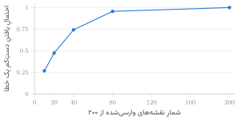
مثال 38.12 (نمونه میگوید خطا هست، نه همهٔ خطاها) پرسش. از ۲۰۰ نقشه که ۶ تایشان خطا دارند، ۲۰ یا ۴۰ نقشه وارسی میشود. احتمالِ یافتنِ دستکم یک خطا و شمارِ مورد انتظارِ خطاهای یافتهشده چیست؟
پاسخ. با ۲۰ نقشه ۴۷٪ و ۰٫۶ خطا. با ۴۰ نقشه ۷۴٪ و ۱٫۲ خطا.
تفسیر. نمونه میگوید آیا خطا هست. همهٔ خطاها را پیدا نمیکند. از این رو قاعدهٔ نیروگاهِ P دو لایه است. نقشههایی که خطایشان گران است، یعنی حفاظت، بالابری و پی، یکییکی وارسی میشوند. باقی نمونهگیری میشوند. اگر نمونه خطا داشته باشد، وارسی به کلِ مجموعه گسترش مییابد. این همان منطقِ نمونهگیریِ پذیرشِ فصلِ ۱۹ است، روی مدارک (فصل 19). وارسی: \(6 \times 40/200 = 1.2\).
- چرا ساعتِ کارشده نشانهٔ پیشرفت نیست؟
- نقشهای ۸۰ ساعته در وضعیتِ IFA چند ساعت کسب کرده است؟
- PV ۵۰۰، EV ۴۰۰ و AC ۵۰۰. SPI و CPI؟
- با بودجهٔ ۲٬۰۰۰ ساعت و CPI ۰٫۸، برآورد در پایان چیست؟
- پرسشِ فنی چه فیلدهایی دارد؟
- پاسخی که طراحی را تغییر میدهد چه مسیری میرود؟
- دو جزءِ هزینهٔ تغییرِ C-017 کداماند؟
- با ۱۰۰ نقشه و ۴ خطا، نمونهٔ ۲۵ تایی چقدر شانسِ یافتنِ یک خطا دارد؟
- کدام نقشهها یکییکی وارسی میشوند؟
پاسخها: (۱) هزینه است، نه دستاورد؛ (۲) ۴۸ ساعت؛ (۳) ۰٫۸ و ۰٫۸؛ (۴) ۲٬۵۰۰ ساعت؛ (۵) شماره، پرسنده، پاسخدهنده، تاریخ، سندِ متأثر؛ (۶) مسیرِ تغییر؛ (۷) بازکاریِ مهندسی و پلّهٔ قیمت؛ (۸) حدودِ ۶۹٪؛ (۹) حفاظت، بالابری، پی.
38.6.7 کنترلِ طراحی در عدد: نُه درسِ دیگر
درسهای بالا پیشرفت را با ارزشِ کسبشده، پرسشهای فنی را با سنشان و وارسی را با نمونه سنجیدند. این بخش نُه پرسشِ دیگر را در عدد میآورد که هر مدیرِ طراحی هر هفته با آنها روبهروست. صفِ بازبینی چقدر بلند میشود؟ هر ردِ نقشه چند هفته هزینه دارد؟ یک تغییر در هر مرحله چند برابر گرانتر است؟ کدام کارها باید با هم تکرار شوند؟ کدام مدرک سفارشِ ترانسفورماتور را عقب میاندازد؟ برآورد در پایان چه فرضی دارد؟ الزامها کِی آرام میگیرند؟ دادهٔ دارایی چقدر تمیز است؟ و بازبینیها چند خطا را پیش از ساخت میگیرند؟ عددها آموزشیاند (A-424). قاعدههای سرانگشتی هم با همین نام آمدهاند.
برنامه:
python -m companion.ch38.examples_s38.6.7.1 صفِ بازبینی و قانونِ لیتل
مهندسِ مالک هر هفته شمارِ معینی سند را بازبینی میکند. اگر سندها تندتر از این برسند، صف بلند میشود. قانونِ لیتل صف، نرخِ رسیدن و زمانِ ماندن را به هم میبندد:
\[ L = \lambda\, W \tag{38.3}\]
در این رابطه \(L\) شمارِ سندهای منتظر است، \(\lambda\) شمارِ سندهایی که در هفته میرسند، و \(W\) زمانی که هر سند بهطورِ میانگین در صف میماند.
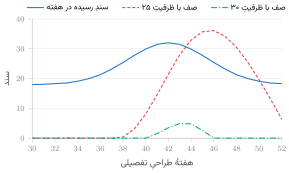
review queue of the owner's engineer (documents a week)
capacity 25/week: peak backlog 36 in week 46, about 1.4 extra weeks
capacity 30/week: peak backlog 5 in week 43, about 0.2 extra weeks
arrivals peak at 32 a week (week 42); total 538
Little's law: documents waiting = arrival rate x time in
review; when arrivals beat capacity, the wait grows every
week until the peak passes - the review slot is planned
from the deliverable schedule, not from the averageمثال 38.13 (پنج سند ظرفیت، یک هفته و نیم صف) پرسش. میانگینِ سندهای رسیده ۲۳ در هفته است، اما در هفتهٔ ۴۲ به ۳۲ میرسد. ظرفیتِ ۲۵ کافی است؟
پاسخ. میانگین گمراه میکند. با ظرفیتِ ۲۵، صف در هفتهٔ ۴۶ به ۳۶ سند میرسد، یعنی حدودِ ۱٫۴ هفته انتظارِ اضافه برای هر سند. با ظرفیتِ ۳۰، اوجِ صف ۵ سند است.
تفسیر. ظرفیتِ بازبینی از برنامهٔ تحویلدادنیها برنامهریزی میشود، نه از میانگین. پنج سند ظرفیتِ بیشتر در هفتههای اوج، یک هفته و نیم از هر سند صرفهجویی میکند. سندی که منتظرِ بازبینی است هنوز به کارِ ساخت نمیآید. وارسی: \(W \approx L/\lambda = 36/25 = 1.4\) هفته.
38.6.7.2 کدهای بازگشت و چرخههایشان
بازبین هر سند را با یکی از سه کد برمیگرداند: A پذیرفته، B پذیرفته با ملاحظهها، C بازنگری و ارسالِ دوباره. اگر احتمالِ کدِ C در هر ارسال \(p_\text{C}\) باشد و ارسالها مستقل باشند، شمارِ ارسالها تا پذیرش توزیعِ هندسی دارد:
\[ \mathrm{E}[N_\text{s}] = \frac{1}{1 - p_\text{C}} \tag{38.4}\]
return codes and the review cycles they cost
disc code C submissions extra weeks
ELE 25% 1.33 1.0
CIV 15% 1.18 0.5
CTL 30% 1.43 1.3
MEC 10% 1.11 0.3
(code A approved, B approved with comments, C revise and
resubmit; a C costs a full cycle)
a 30 % rejection rate adds about 1.3 weeks to every CTL
drawing on average - and much more to the unlucky ones;
first-time-right comes from interface data agreed before
drawing (lesson B), not from faster reviewersایده. کدِ C یک چرخهٔ کامل هزینه دارد: دو هفته بازبینی و یک هفته بازنگری. در رشتهٔ کنترل با ۳۰ درصد رد، هر نقشه بهطورِ میانگین ۱٫۳ هفته دیرتر میشود. نقشههای بدشانس بیشتر دیر میشوند، چون توزیعِ هندسی دنباله دارد. علاج بازبینِ تندتر نیست. علاج دادهٔ رابطی است که پیش از کشیدنِ نقشه توافق شده باشد (بخش 38.3.3). بیشترِ ردها از عددی میآیند که هنوز با رشتهٔ دیگر یکی نشده است.
38.6.7.3 هزینهٔ یک تغییر در هر مرحله
cost of the same change by stage (a common rule of thumb:
about x3 per stage, not a law)
stage multiple cost of C-017, k u
concept 1 1.0
basic design 3 2.9
detailed design 10 9.7
construction 30 29.1
operation 100 96.9
C-017 (5.5 -> 5.6 MVA) cost 102 h of rework in detailed
design (9.7 k u); the same change after the transformers
were built would mean new units - the multiplier is the
reason the baseline is frozen before orders are placedایده. یک قاعدهٔ سرانگشتیِ رایج میگوید هزینهٔ یک تغییر در هر مرحله حدودِ سه برابر میشود. این قانون نیست، اما جهتش درست است. تغییرِ C-017 در طراحیِ تفصیلی ۱۰۲ ساعت بازکاری داشت (بخش 38.5.4). همان تغییر پس از ساختِ ترانسفورماتورها به معنای واحدهای تازه بود. به همین دلیل خطمبنا پیش از سفارش منجمد میشود (بخش 38.9.2). پس از انجماد هم هر تغییر از مسیرِ کنترلشده میگذرد و فهرستِ اثرش را با خود دارد.
38.6.7.4 ماتریسِ ساختارِ طراحی و حلقهها
ماتریسِ ساختارِ طراحی نشان میدهد هر کار خروجیِ کدام کارِ دیگر را لازم دارد. اگر کارها را به ترتیبی بچینیم که هر کار پس از نیازهایش بیاید، همهٔ نقطهها زیرِ قطر میافتند. نقطهای که بالای قطر بماند حلقه است: دو کار به خروجیِ همدیگر نیاز دارند و باید با هم تکرار شوند. الگوریتمِ گروههای بهشدت همبند (Tarjan) این حلقهها را پیدا میکند.
TASKS = ["site layout", "one-line", "load flow", "short circuit",
"protection", "cable sizing", "earthing", "transformer spec"]
NEEDS = { # task: tasks whose output it needs (A-424)
"one-line": ["site layout"], "load flow": ["one-line"],
"short circuit": ["one-line", "transformer spec"],
"protection": ["short circuit", "cable sizing"],
"cable sizing": ["load flow", "short circuit", "protection"],
"earthing": ["short circuit", "site layout"],
"transformer spec": ["load flow", "short circuit"],
}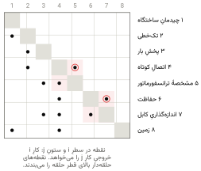
design structure matrix: who needs whose output
order of work (a group in [ ] must iterate):
site layout
one-line
load flow
[short circuit, transformer spec]
[protection, cable sizing]
earthing
iteration groups: 2; largest has 2 tasks
both loops are physics: the transformer impedance sets the
fault current, and the fault current sets what the
transformer must withstand; cable size depends on fault
current and clearing time, clearing time on the settings,
settings on the cable. The plan budgets two passes and
freezes the impedance first to break the first loopمثال 38.14 (حلقهای که فیزیک است، نه خطای برنامهریزی) پرسش. دو گروهِ تکرار کداماند و چگونه شکسته میشوند؟
پاسخ. گروهِ اول «اتصالِ کوتاه» و «مشخصهٔ ترانسفورماتور» است و گروهِ دوم «حفاظت» و «اندازهگذاریِ کابل».
تفسیر. هر دو حلقه از فیزیک میآیند. امپدانسِ ترانسفورماتور جریانِ خطا را تعیین میکند. جریانِ خطا هم تعیین میکند ترانسفورماتور باید چه چیزی را تحمل کند (فصل 25). اندازهٔ کابل به جریانِ خطا و زمانِ قطع بسته است. زمانِ قطع به تنظیمهای حفاظت بسته است و تنظیمها به کابل (فصل 26). حلقه را با برنامهریزی نمیشود حذف کرد. میشود آن را شکست: امپدانس با یک مقدارِ فرضی منجمد میشود، دو دور محاسبه بودجه میگیرد، و مقدارِ نهایی پس از دادهٔ سازنده دوباره وارسی میشود. وارسی: دو نقطه بالای قطر در شکل 38.9، یعنی (4, 5) و (6, 7).
38.6.7.5 مسیرِ بحرانی تا سفارشِ ترانسفورماتور
WORK = { # deliverable: (weeks, predecessors) (A-424)
"load flow": (3, []), "short circuit": (2, ["load flow"]),
"transformer spec": (2, ["load flow", "short circuit"]),
"earthing study": (4, ["short circuit"]),
"RFQ issued": (1, ["transformer spec"]),
"bids evaluated": (6, ["RFQ issued"]),
"order placed": (2, ["bids evaluated", "earthing study"]),
}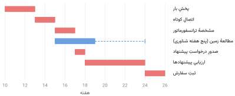
critical path from load flow to the transformer order
deliverable weeks start latest float
load flow 3 10 10 0
short circuit 2 13 13 0
transformer spec 2 15 15 0
earthing study 4 15 20 5
RFQ issued 1 17 17 0
bids evaluated 6 18 18 0
order placed 2 24 24 0
order placed by week 26; critical: 6 of 7 tasks
the earthing study has float: it can slip 5 weeks
without moving the order; a week lost on the short-
circuit study moves the order and the transformers by
a week (ch 39: delivery 30 weeks after the order)مثال 38.15 (هفتهای که به ترانسفورماتور میرسد) پرسش. کدام مدرکها سفارشِ ترانسفورماتور را عقب میاندازند و کدام نه؟
پاسخ. شش کار از هفت کار بحرانیاند: پخشِ بار، اتصالِ کوتاه، مشخصهٔ ترانسفورماتور، درخواستِ پیشنهاد، ارزیابی و ثبتِ سفارش. مطالعهٔ زمین پنج هفته شناوری دارد. سفارش تا هفتهٔ ۲۶ ثبت میشود.
تفسیر. گذرِ رو به جلو زودترین شروعِ هر کار را میدهد و گذرِ رو به عقب دیرترین شروعی را که پایان را عقب نیندازد. فاصلهٔ این دو شناوری است. هفتهای که در مطالعهٔ اتصالِ کوتاه از دست برود، سفارش را یک هفته عقب میاندازد. ترانسفورماتورها ۳۰ هفته پس از سفارش میرسند (بخش 39.5.2)، پس آن هفته به ساختگاه هم میرسد. مدیرِ طراحی منابع را به کارهای بحرانی میدهد، نه به کاری که بلندتر است. وارسی: \(10 + 3 + 2 + 2 + 1 + 6 + 2 = 26\).
38.6.7.6 برآورد در پایان و فرضِ آن
برآوردِ پایان در بخش 38.6.2 با \(\text{BAC}/\text{CPI}\) حساب شد. این تنها فرمول نیست. هر فرمول فرضی دربارهٔ آینده دارد:
\[ \text{EAC}_1 = \frac{\text{BAC}}{\text{CPI}},\quad \text{EAC}_2 = \text{AC} + (\text{BAC} - \text{EV}),\quad \text{EAC}_3 = \text{AC} + \frac{\text{BAC} - \text{EV}}{\text{CPI}\,\text{SPI}} \tag{38.5}\]
و شاخصِ عملکردِ لازم برای تکمیل میگوید هر ساعتِ باقیمانده باید چقدر کار بسازد تا بودجه بماند:
\[ \text{TCPI} = \frac{\text{BAC} - \text{EV}}{\text{BAC} - \text{AC}} \tag{38.6}\]
estimates at completion of the engineering (hours)
BAC 7,342; CPI 0.85; SPI 0.68
BAC / CPI 8,661
AC + (BAC - EV) 7,883
AC + (BAC - EV) / (CPI x SPI) 11,101
TCPI to finish on budget: 1.14 - every remaining
hour would have to earn 1.14 hours of work
the three formulas say: problems are over (AC + rest),
they continue (BAC/CPI), or late work costs more as it
is rushed (CPI x SPI); the forecast states its assumptionمثال 38.16 (سه برآورد، سه فرض) پرسش. کدام برآورد را گزارش میکنید؟
پاسخ. هر سه را، با فرضِ هر کدام. اگر مشکلها تمام شده باشند، 7,883 ساعت. اگر بهرهوری همین بماند، 8,661 ساعت. اگر عقبماندگی با شتاب جبران شود و کارِ شتابزده گرانتر باشد، 11,101 ساعت. TCPI برابر با 1.14 است.
تفسیر. TCPI بالای یک یعنی بقیهٔ کار باید از کارِ تا امروز کاراتر باشد. وقتی CPI برابر با 0.85 است، رسیدن به 1.14 بیتغییری در روشِ کار باورپذیر نیست. گزارشِ صادق برآوردِ دوم را خوشبینانه مینامد و برآوردِ اول را خطمبنا قرار میدهد. وارسی: \((7342 - 3012)/(7342 - 3553) = 1.14\).
38.6.7.7 نوسانِ الزامها
requirements volatility (180 requirements, 12 months)
month: 9 7 6 8 5 4 6 3 2 4 1 2
first-quarter rate 4.1 % a month; last quarter 1.3 %
changes after the freeze (month 8): 9, each by
the change procedure with its impact list (lesson D)
at the average C-017 rework of 102 h for 13 documents, 9 late
changes would cost about 918 h if each were as wide
volatility falling to near zero is the evidence that the
basis is stable enough to buy againstایده. نوسانِ الزامها شمارِ تغییرهای الزام در ماه به نسبتِ کلِ الزامهاست. در سه ماهِ اول ۴٫۱ درصد در ماه است و در سه ماهِ آخر ۱٫۳ درصد. پس از انجمادِ ماهِ هشتم هنوز ۹ تغییر رسیده است. هر کدام از مسیرِ تغییر میگذرد و فهرستِ اثرش را دارد (بخش 38.5.4). اگر هر کدام به پهنای C-017 بود، روی هم حدودِ ۹۱۸ ساعت بازکاری میشد. نوسانی که به نزدیکِ صفر برسد شاهد است که مبنا برای خرید به اندازهٔ کافی پایدار است. برنامهٔ سفارشها بر این شاهد تکیه میکند، نه بر تاریخِ انجماد در برنامه.
38.6.7.8 قاعدههای کیفیتِ داده روی دفترِ داراییها
data-quality rules on an asset register of 400 rows
tag format 395 pass ( 98.8%)
tag unique 394 pass ( 98.5%)
parent exists 396 pass ( 99.0%)
serial present 388 pass ( 97.0%)
unit valid 394 pass ( 98.5%)
rows passing every rule: 367 (91.8%)
each rule is simple; together they reject one row in
twelve. A duplicated tag is the worst: two functions
answer to one name (ch 23). The register exposes it before
handover, not an operator during a faultمثال 38.17 (یک سطر در دوازده) پرسش. دفترِ ۴۰۰ سطریِ داراییها با پنج قاعده وارسی شده است. چند سطر همهٔ قاعدهها را میگذرانند و کدام خطا از همه بدتر است؟
پاسخ. ۳۶۷ سطر (۹۱٫۸ درصد). شش سطر برچسبِ تکراری دارند، یعنی سه جفت. پنج سطر برچسبِ بیقالب دارند، چهار سطر والدِ ناموجود، دوازده سطر بیشمارهٔ سریال و شش سطر یکای نادرست.
تفسیر. هر قاعده ساده است، اما با هم از هر دوازده سطر یکی را رد میکنند. برچسبِ تکراری از همه بدتر است: دو کارکرد به یک نام پاسخ میدهند (فصل 23) و در یک خطا، اپراتور ممکن است به سراغِ کلیدِ اشتباه برود. این قاعدهها همان وارسیهای پذیرشِ بستهٔ تحویلاند (بخش 38.8.3). آنها پیش از تحویل اجرا میشوند، نه پس از آن. وارسی: \(400 - 367 = 33\) سطرِ رد شده. این از جمعِ شکستهای قاعدهها (\(5 + 6 + 4 + 12 + 6 = 33\)) گرفته شده است، چون در این مجموعه هیچ سطری دو بار رد نمیشود.
38.6.7.9 مهارِ خطا در بازبینیهای طراحی
defect containment by design reviews (teaching rates)
stage made found passed on
30 % 40 20.0 20.0
60 % 50 42.0 28.0
90 % 30 34.8 23.2
IFC check 0 11.6 11.6
made 120; reach construction 11.6 (10%)
each review finds a share of what is there, never all:
the escapes are found on site at ten times the cost
(rule of thumb above); a better checklist at 60 % pays
more than a longer IFC checkایده. هر بازبینی سهمی از خطاهای موجود را پیدا میکند، نه همه را. خطایی که پیدا نشود به مرحلهٔ بعد میرود و با خطاهای تازهٔ آن مرحله جمع میشود. از ۱۲۰ خطا، ۱۱٫۶ خطا به ساخت میرسد. هر کدام در ساختگاه چند برابرِ خطای روی کاغذ هزینه دارد (بخش 38.6.7.3). عدد یک چیزِ کمتر بدیهی را هم نشان میدهد. یک فهرستِ وارسیِ بهتر در بازبینیِ ۶۰ درصد بیشتر از یک وارسیِ طولانیترِ IFC میارزد، چون خطاها را زودتر و ارزانتر میگیرد. این همان منطقِ وارسیِ نمونهای است (بخش 38.6.6): بازبینی میگوید خطا هست، نه اینکه همهٔ خطاها پیدا شدهاند.
- معادلهٔ 38.3 را توضیح دهید. چرا ظرفیت از میانگینِ رسیدنها تعیین نمیشود؟
- با ۲۰ درصد کدِ C، هر سند بهطورِ میانگین چند بار ارسال میشود؟
- چرا هزینهٔ یک تغییر با مرحله بالا میرود؟ عددِ «سه برابر» چه وضعی دارد؟
- در ماتریسِ ساختارِ طراحی، نقطهٔ بالای قطر یعنی چه؟
- دو حلقهٔ طراحیِ این درس و راهِ شکستنِ هر کدام را بنویسید.
- شناوری چیست و چرا منابع به کارهای بحرانی میروند؟
- سه فرمولِ معادلهٔ 38.5 چه فرضهایی دارند؟
- TCPI برابر با 1.14 یعنی چه؟
- نوسانِ الزامها چه شاهدی برای خرید است؟
- چرا برچسبِ تکراری بدترین خطای دفترِ داراییهاست؟
- چرا بازبینیِ زودتر بیشتر از بازبینیِ طولانیترِ آخر میارزد؟
38.7 ج. خطمبنای رابطِ اتصال به شبکه
مرزِ نیروگاه و شبکه از همهٔ رابطها حساستر است. دو مالک دارد، دو مجموعه قاعده، و تغییری در یک سو میتواند حفاظت یا اندازهگیری یا مجوزِ سوی دیگر را جابهجا کند. فصلِ ۲۸ مطالعههای شبکه را ساخت و فصلِ ۲۳ مرزِ مالکیت را (فصل 23، فصل 28). این بخش آنها را به یک خطمبنای کنترلشده تبدیل میکند: نمودارِ مرزِ اتصال، دادههای مسیر و مدار، دادههای ورودیِ مالک و بهرهبردار، فرضهای زمین و مجوز، جدولِ رابطِ فنی، و ماتریسِ مسئولیت.
38.7.1 ماتریسِ مسئولیت
ایده. برای هر موردِ رابط، ماتریسِ مسئولیت (به انگلیسی RACI matrix، فصل 1) میگوید چه کسی کار را انجام میدهد (R)، چه کسی پاسخگوی نتیجه است (A)، با چه کسی مشورت میشود (C) و چه کسی آگاه میشود (I). قاعده ساده است: هر مورد دقیقاً یک پاسخگو دارد.
responsibility matrix of the grid connection (planted gaps)
item accountable
connection boundary diagram grid
line route and circuit data - <- none
grid bay protection settings - <- none
telemetry point list to the operator grid
revenue metering regulator
earthing at the boundary plant, grid <- two
land and permits for the line regulator
3 items without exactly one accountable party; each is
settled at the next interface meeting and the matrix is
re-issued - an item with two owners has noneمثال 38.18 (موردی با دو مالک، مالک ندارد) پرسش. کدام موردهای رابطِ اتصال پاسخگوی یکتا ندارند؟ با هر کدام چه میشود؟ (ماتریسِ ساختگی.)
پاسخ. سه مورد. «دادههای مسیر و مدارِ خط» و «تنظیمِ حفاظتِ بیاتصالِ شبکه» پاسخگو ندارند. «زمین در مرز» دو پاسخگو دارد.
تفسیر. موردِ بیپاسخگو را هر طرف کارِ دیگری میداند. موردِ با دو پاسخگو را هر طرف به دیگری واگذار میکند. زمین در مرز بدترین است: اتصالِ زمینِ دو سامانه در یک نقطه به هم میرسد، و ولتاژِ تماس در خطا به هر دو وابسته است (فصل 26). هر سه در جلسهٔ رابطِ بعدی تعیین میشوند و ماتریس دوباره صادر میشود. وارسی: \(2 + 1 = 3\).
38.7.2 تغییری در سوی شبکه
a change in the grid operator's bay that reaches the plant
change: grid bay CT ratio 600/1 -> 800/1 (teaching)
plant documents and tests touched: 6
line differential settings
plant-end protection study
intertrip scheme test
relay settings file
one-line diagram
FAT procedure
the operator owns the bay, the plant owns what depends on
it; the interface schedule names both, and a change on
either side is notified to the other before it is
issued (ch 28, line differential and intertrip)ایده. بهرهبردارِ شبکه نسبتِ ترانسفورماتورِ جریانِ بیاش را عوض میکند. این بیمال اوست. اما شش سند و آزمونِ نیروگاه به آن وابستهاند: تنظیمِ حفاظتِ دیفرانسیلِ خط، آزمونِ قطعِ متقابل، مطالعهٔ حفاظتِ سرِ نیروگاه، پروندهٔ تنظیم، نمودارِ تکخطی و روشِ آزمونِ کارخانه. جدولِ رابطِ فنی هر دو سو را نام میبرد. هر تغییر در هر سو، پیش از صدور، به سوی دیگر اعلام میشود. قرارداد یا توافقِ اتصال این اعلام را الزامی میکند. شکلِ آن را هر کشور و هر بهرهبردار خودش تعیین میکند (فصل 55).
38.7.3 محتوای خطمبنای رابطِ شبکه
| جزء | چه میگوید | منبع |
|---|---|---|
| نمودارِ مرزِ اتصال | مرزِ مالکیت، بهرهبرداری و نگهداری | فصلِ ۲۳ |
| دادههای مسیر و مدار | طول، رسانا، ظرفیت، امپدانس | فصلهای ۲۴ و ۲۸ |
| ورودیهای مالک و بهرهبردار | سطحِ اتصالِ کوتاه، تنظیمها، الزامها | بهرهبردارِ شبکه |
| فرضهای زمین و مجوز | مسیر، حریم، مجوزها | فصلهای ۱۴ و ۲۲ |
| جدولِ رابطِ فنی | هر داده با مالک و تاریخ | این فصل |
| ماتریسِ مسئولیت | پاسخگوی یکتای هر مورد | این فصل |
ایده. همهٔ اینها با هم یک خطمبنا هستند و با هم بازنگری میگیرند. دادهای که بهرهبردار هنوز نداده، با برچسبِ «در انتظار» و تاریخِ مورد انتظار میآید، و هر سندِ وابسته به آن نگهدار دارد. پاسخهای بهرهبردار به مجهولِ U-115 گره خوردهاند.
- چهار نقشِ ماتریسِ مسئولیت را تعریف کنید.
- قاعدهٔ اصلیِ ماتریس چیست؟
- چرا موردی با دو پاسخگو بیمالک است؟
- چرا زمین در مرز از همه حساستر است؟
- تغییرِ نسبتِ ترانسفورماتورِ جریانِ بیِ شبکه به کدام سندهای نیروگاه میرسد؟
- شش جزءِ خطمبنای رابطِ شبکه را نام ببرید.
- دادهای که هنوز نیامده چگونه در خطمبنا میآید؟
پاسخها: (۱) انجامدهنده، پاسخگو، مشورت، آگاه؛ (۲) یک پاسخگوی یکتا؛ (۳) هر طرف به دیگری واگذار میکند؛ (۴) ولتاژِ تماس به هر دو سامانه وابسته است؛ (۵) حفاظتِ دیفرانسیلِ خط، قطعِ متقابل، مطالعهٔ حفاظت، پروندهٔ تنظیم، تکخطی، روشِ آزمون؛ (۶) نمودارِ مرز، دادههای مسیر، ورودیهای بهرهبردار، فرضهای زمین و مجوز، جدولِ رابط، ماتریسِ مسئولیت؛ (۷) با برچسبِ «در انتظار» و تاریخ، و نگهدار روی سندهای وابسته.
38.8 چ. الزامهای اطلاعاتی و خطمبنای اطلاعاتِ دارایی
نیروگاه فقط ساخته نمیشود. اطلاعاتش هم تحویل میشود: نقشههای چونساخت، دفترِ داراییها، کتابچهها، سابقههای آزمون، پشتیبانِ نرمافزار و تنظیمها. مالک باید پیشتر بگوید چه میخواهد، به چه شکل، و چگونه آن را میپذیرد. این الزامهای اطلاعاتیِ مالک است (فصل 5). جایی که این اطلاعات در طولِ پروژه زندگی میکنند، محیطِ مشترکِ داده است.
38.8.1 محیطِ مشترکِ داده
states of the common data environment and the statuses of ch 2
state who may use it statuses
work in progress author's team only WIP
shared project teams, for coordination IFR, IFI, IFA
published everyone who builds or buys APP, IFC
archived record of what was used and built ASB, SUP
information moves from one state to the next only through
a check and an approval; nobody builds from 'shared', and
nothing is deleted from 'archived' (STD-031 concept)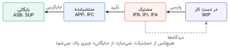
ایده. محیطِ مشترکِ داده (به انگلیسی common data environment) چهار وضعیت دارد: در دستِ کار، مشترک، منتشرشده و بایگانی. اطلاعات فقط با وارسی و تأیید از یک وضعیت به وضعیتِ بعد میرود. هیچکس از «مشترک» نمیسازد. از «بایگانی» چیزی پاک نمیشود. استانداردِ سازماندهیِ اطلاعاتِ ساختمان و عمران (STD-031) این مفهوم را شرح میدهد. نظامِ وضعیتِ فصلِ ۲ روی همین چهار وضعیت مینشیند. دسترسی، دورهٔ نگهداری و مسئولیتِ تبادل هم در همین محیط تعریف میشوند (بخش 36.6.4).
38.8.2 الزامهای اطلاعاتی بهصورتِ وارسی
owner's information requirements checked on six asset records
tag tag rule asset id location item
=WS1-2-T1 ok ok ok wind unit transformer
=PVF2-3-T1 ok ok ok PV unit transformer
=PVF2-3-U1 ok NO ok PV inverter
=T1 ok ok NO main transformer
PVF2-Q1 NO ok ok feeder breaker
=BESS-A-1 ok ok ok battery container
complete records: 3 of 6
(locations in the local grid of the fictional site, ch 14)
the requirement is written as a check a program can run:
tag pattern, stable asset id (ch 35), a location in the
site's GIS - and the acceptance is the share that passesایده. الزامِ «اطلاعاتِ کامل» قابلِ پذیرش نیست، چون نمیشود سنجیدش. الزام بهصورتِ وارسیای نوشته میشود که یک برنامه اجرا کند: برچسب از الگو پیروی میکند، شناسهٔ پایدارِ دارایی دارد (بخش 35.7.1)، و موقعیتش در سامانهٔ اطلاعاتِ مکانیِ ساختگاه ثبت است. پذیرش، سهمی است که میگذرد. اینجا سه از شش رکورد کاملاند. اینورتر شناسه ندارد. ترانسفورماتورِ اصلی موقعیت ندارد. کلیدِ فیدر برچسبش علامتِ «=» را جا انداخته است. فهرستهای قابلِ خواندن با ماشین، مثلاً جدولِ کابل یا فهرستِ تجهیزات در قالبِ جدولی، با همین وارسیها پذیرفته میشوند.
38.8.3 پذیرشِ بستهٔ تحویل
handover package against its acceptance criteria (A-421)
item weight complete critical
as-built drawings 3 92 % yes
asset register attributes 3 85 % yes
O&M manuals 2 70 %
test and commissioning records 3 100 % yes
spare parts lists 1 60 %
software and settings backups 2 95 % yes
warranties and certificates 1 80 %
weighted score 86.7 %
rule: every critical item at 98 % or better, the rest
scored; critical items short: 3
a weighted score of 87 % sounds nearly done; the rule
says the package is not accepted until the as-built
drawings, the asset attributes and the backups areمثال 38.19 (۸۷ درصد و هنوز پذیرفته نیست) پرسش. بستهٔ تحویل هفت بخش دارد با وزن و سهمِ کاملشده. امتیازِ وزنی چیست؟ آیا بسته پذیرفته میشود؟ (دادهٔ ساختگی، A-421.)
پاسخ. امتیازِ وزنی ۸۶٫۷٪ است. سه بخشِ بحرانی زیرِ ۹۸٪اند: نقشههای چونساخت (۹۲٪)، ویژگیهای دفترِ دارایی (۸۵٪) و پشتیبانِ نرمافزار و تنظیمها (۹۵٪). بسته پذیرفته نمیشود.
تفسیر. میانگینِ وزنی خوب به نظر میرسد و چیزِ مهم را پنهان میکند. معیارِ پذیرش دو لایه دارد: هر بخشِ بحرانی جداگانه دستکم ۹۸٪، و بقیه امتیازِ وزنی. نقشهٔ چونساختی که نیست یعنی تعمیرکارِ سالِ دهم با نقشهٔ اجرایی کار میکند. پشتیبانی که نیست یعنی بازیابی پس از خرابی ممکن نیست (بخش 36.4.3). فصلهای ۵۰ و ۵۱ تحویل را اجرا میکنند (فصل 50، فصل 51). وارسی: \((3 \times 0.92 + 3 \times 0.85 + 2 \times 0.70 + 3 + 0.6 + 2 \times 0.95 + 0.8)/15 = 0.867\).
- چهار وضعیتِ محیطِ مشترکِ داده را نام ببرید.
- وضعیتهای IFC و ASB در کدام وضعیتِ محیطاند؟
- چرا «اطلاعاتِ کامل» الزامِ قابلِ پذیرش نیست؟
- سه وارسیِ رکوردِ دارایی را بنویسید.
- معیارِ پذیرشِ دو لایه چیست؟
- بستهای با امتیازِ ۹۵٪ و یک بخشِ بحرانیِ ۹۰٪ پذیرفته میشود؟
پاسخها: (۱) در دستِ کار، مشترک، منتشرشده، بایگانی؛ (۲) منتشرشده و بایگانی؛ (۳) قابلِ سنجش نیست؛ (۴) الگوی برچسب، شناسهٔ پایدار، موقعیت؛ (۵) هر بخشِ بحرانی ۹۸٪ و بقیه امتیازِ وزنی؛ (۶) نه.
38.8.4 دفترِ انتشارِ محیطِ مشترکِ داده و نقشها
وضعیتِ «تأییدشده» فقط وقتی معنا دارد که کسی آن را داده باشد که اجازهاش را داشت. محیطِ مشترکِ داده هر اقدام را ثبت میکند: چه کسی، با چه نقشی، چه کاری روی کدام سند کرد. این دفتر با جدولِ مجوزِ نقشها مقایسه میشود. سنجش روی نقشهاست، نه روی افراد. شناسههای کاربر ساختگیاند (A-424).
publishing log of the CDE: 8 actions
not permitted: author 'publish' on PLP-ELE-CAL-0009
not permitted: checker 'approve' on PLP-CIV-DWG-0031
published without a valid approval: PLP-ELE-CAL-0009
published without a valid approval: PLP-CIV-DWG-0031
the check is of roles, not of people: an author cannot
publish and a checker cannot approve - otherwise the
'approved' status means nothingایده. دو اقدامِ غیرمجاز دو انتشارِ بیاعتبار ساختهاند. یک نویسنده محاسبهای را خودش منتشر کرده است. یک وارسیکننده نقشهای را تأیید کرده است، در حالی که نقشِ او فقط ملاحظهدادن است. سامانهای که این اجازهها را بدهد، وضعیتها را بیمعنا میکند. پس دفتر هر هفته وارسی میشود و نتیجهاش به کنترلکنندهٔ مدارک میرسد. سندِ منتشرشده بیتأییدِ معتبر به وضعیتِ قبلی برمیگردد و دوباره از مسیر میگذرد (بخش 38.8.1).
38.8.5 ارسالنامهها در برابرِ دفترِ مدارک
transmittals reconciled with the register
TR-0141 PLP-ELE-CAL-0009: sent as IFA, register says IFR
TR-0142 PLP-CIV-DWG-0031: sent as IFC, register says APP
mismatches: 2 of 5
the contractor builds from what was sent: a drawing sent
'IFC' while the register says 'APP' may be built before
it is issued - the register and the transmittal are
reconciled weekly, and the transmittal is correctedمثال 38.20 (ارسالشده برای اجرا، ثبتشده برای تأیید) پرسش. دو ارسالنامه با دفتر نمیخوانند. کدام خطرناکتر است؟
پاسخ. PLP-CIV-DWG-0031 با وضعیتِ IFC فرستاده شده، اما دفتر وضعیتِ آن را APP نشان میدهد. پیمانکار ممکن است از نقشهای بسازد که هنوز برای اجرا صادر نشده است. ناهمخوانیِ دیگر، یعنی IFA در برابرِ IFR، فقط بازبینی را به هم میریزد.
تفسیر. پیمانکار از چیزی میسازد که به دستش رسیده، نه از دفترِ مالک. ارسالنامه و دفتر هر هفته با هم تطبیق داده میشوند. ارسالنامهٔ نادرست با ارسالنامهٔ تازه اصلاح میشود، نه با تلفن. این همان شکافی است که در بخش 38.2.3 با تاریخچهٔ وضعیتها دیدیم، این بار در مرزِ میانِ طراح و سازنده. وارسی: دو ناهمخوانی در پنج سطر.
38.9 ساخت و تولیدِ صنعتی: رهاسازی برای ساخت
این فصل چیزی نمیسازد. اما تصمیم میگیرد چه چیزی و کِی برای ساخت رها شود. فرایندهای کارخانه، طرحِ کنترل و پروندهٔ آزمونِ هر محصول در فصلهای ۴۰ تا ۴۸ میآیند (فصل 40). این بخش سه ابزارِ مرزی را میآورد: خطمبناهای پیکربندی، دروازهٔ رهاسازی برای ساخت، و بازبینیِ خطرِ طراحی.
38.9.1 خطمبناهای پیکربندی
four configuration baselines of Plant P (teaching)
baseline fixes held in changed by
functional what the plant must do requirements owner
allocated which part does what specs, ICDs design authority
product how each part is built IFC drawings change board
as-built what was built ASB set, assets operations
a change names the baseline it touches; a change to the
functional baseline goes back to the owner, one to the
product baseline stays with the change boardایده. مدیریتِ پیکربندی (فصل 20) چهار خطمبنا دارد. خطمبنای کارکردی میگوید نیروگاه باید چه کند. خطمبنای تخصیصی میگوید هر جزء چه سهمی دارد. خطمبنای محصول میگوید هر جزء چگونه ساخته میشود. خطمبنای چونساخت میگوید چه ساخته شد. هر تغییر خطمبنایی را که به آن دست میزند نام میبرد. تغییرِ خطمبنای کارکردی به مالک برمیگردد. تغییرِ خطمبنای محصول نزدِ هیئتِ تغییر میماند. تغییرِ C-017 به خطمبنای محصول دست میزند، چون رتبهٔ یک جزء را عوض میکند و الزام را نه (بخش 38.6.4).
38.9.2 دروازهٔ رهاسازی برای ساخت
release-for-manufacture gate of the inverter skid (teaching)
[x] specification approved (APP)
[ ] ICD items all closed
[x] design review comments closed
[x] DfM/DfT review held
[x] hazard review actions closed or accepted
[x] inspection and test plan agreed
[ ] FAT procedure approved
[x] document set at IFC and in the register
6 of 8 met: the skid is not released; the open
ICD items (short-circuit level, heat, grid behaviour) and
the FAT procedure hold it. Releasing early buys weeks and
pays them back as factory rework (ch 40, ch 44)مثال 38.21 (شش از هشت، رها نمیشود) پرسش. اسکیدِ اینورتر شش از هشت شرطِ دروازهٔ رهاسازی را دارد. آیا برای ساخت رها میشود؟ چه چیزی آن را نگه داشته است؟
پاسخ. نه. موردهای بازِ سندِ کنترلِ رابط (سطحِ اتصالِ کوتاه، گرما، رفتار در شبکه) و روشِ آزمونِ کارخانهٔ تأییدنشده آن را نگه داشتهاند.
تفسیر. رهاسازیِ زودهنگام چند هفته برنامه میخرد و آن را با بازکاری در کارخانه پس میدهد: تهویهای که برای گرمای کمتر طراحی شده، یا کلیدی که برای اتصالِ کوتاهِ کمتر انتخاب شده. اگر برنامه رهاسازیِ جزئی را لازم کند، مثلاً سفارشِ فولادِ اسکید پیش از بسته شدنِ گرما، آن بخش با فهرستِ نوشتهٔ ریسکها رها میشود و بقیه نگه داشته میشود. وارسی: \(8 - 6 = 2\) شرطِ باز.
38.9.3 بازبینیِ خطرِ طراحی
hazard review of the inverter skid design (synthetic record)
guideword findings actions closed
electrical 6 6
fire 4 3
mechanical / lifting 3 3
thermal 2 1
access / falls 3 3
environment 2 2
18 of 20 actions closed (90 %); the two open ones
(fire separation, heat at the inlet) wait for the ICD
values - a hazard review is part of the design, and its
open actions are holds like any other (ch 32)ایده. شناساییِ خطر (فصل 32) روی طراحیِ اسکید با کلیدواژهها انجام شده است: برق، حریق، مکانیک و بالابری، گرما، دسترسی و سقوط، محیطِ زیست. ۱۸ از ۲۰ اقدام بسته شدهاند. دو اقدامِ باز، یعنی جدایی از حریق و گرما در ورودیِ هوا، منتظرِ مقدارهای سندِ کنترلِ رابطاند. بازبینیِ خطر بخشی از طراحی است و اقدامهای بازش مثلِ هر موردِ بازِ دیگری نگهدارند. استانداردهای ایمنیِ تجهیز و فرایندِ کارخانه در فصلهای ۴۰ تا ۴۸ میآیند. در این فصل فقط مرزِ آنها با طراحی نشان داده میشود.
- چهار خطمبنای پیکربندی را با آنچه هر کدام تثبیت میکند بنویسید.
- تغییرِ رتبهٔ یک ترانسفورماتور به کدام خطمبنا دست میزند؟
- هشت شرطِ دروازهٔ رهاسازیِ اسکید کداماند؟
- رهاسازیِ جزئی کِی رواست؟
- چرا اقدامهای بازِ بازبینیِ خطر نگهدارند؟
پاسخها: (۱) کارکردی، تخصیصی، محصول، چونساخت؛ (۲) محصول؛ (۳) مشخصهٔ تأییدشده، رابطهای بسته، دیدگاههای بسته، بازبینیِ ساخت و آزمون، اقدامهای خطر، برنامهٔ بازرسی و آزمون، روشِ آزمونِ کارخانه، مدارکِ برای اجرا؛ (۴) وقتی برنامه لازم کند و ریسکها نوشته شوند؛ (۵) چون طراحی به مقدارهایشان وابسته است.
38.10 نیروگاهِ P: سه مثالِ یکپارچه
برنامه:
python -m companion.ch38.integratedمثال 38.22 (مقدماتی: دو نتیجه با دست) پرسش. شاخصهای ارزشِ کسبشده و احتمالِ یافتنِ خطا در یک نمونهٔ بیستتایی را با دست حساب و با کد مقایسه کنید.
two design-control results checked by hand
SPI = 3,012 / 4,451 = 0.68; code 0.68
CPI = 3,012 / 3,553 = 0.85; EAC = 7,342 / CPI = 8,661 h
chance a 20-drawing sample of 200 finds one of 6 errors: 0.473; code 0.473
the hand check of EAC catches the common slip of dividing
by SPI instead of CPI: hours are a cost, not a dateپاسخ. \(\text{SPI} = 0.68\)، \(\text{CPI} = 0.85\)، \(\text{EAC} = 8\,661\,\text{h}\) و احتمالِ ۰٫۴۷۳، همه برابر با کد.
تفسیر. لغزشِ رایج در برآوردِ پایان، تقسیمِ بودجه بر SPI است. حسابِ دستی آن را پیدا میکند، چون ساعتها هزینهاند و با شاخصِ هزینه پیشبینی میشوند. وارسی: \(7\,342 \times 3\,553 / 3\,012 = 8\,661\).
مثال 38.23 (میانی: بستهٔ کنترلِ طراحی در عدد) پرسش. بستهٔ کنترلِ طراحیِ نیروگاهِ P را در هفتهٔ ۴۰ در عدد خلاصه کنید.
the design-control package of Plant P in numbers (synthetic, week 40)
register: 120 deliverables; 2 numbers, 3 revisions, 1 checker,
9 owners to fix; 2 illegal status changes
linked registers: 5 disagreements; 3 stale or broken references
requirements: design 83 %, verification method 83 %, evidence
17 % (rest from FAT, SAT, commissioning)
inverter skid ICD: 3 of 12 items open; release held
engineering: SPI 0.68, CPI 0.85, EAC 8,661 h; 18 queries older
than 14 days
change C-017: 13 documents, 102 h, about 50 k u, approved
grid interface: 3 responsibilities without one owner
handover rule: every critical item at 98 % - 3 short todayتفسیر. هیچکدام از این عددها بهتنهایی پروژه را متوقف نمیکند. با هم میگویند کجا اطلاعات از ساخت عقب است و کدام نقشه ممکن است اشتباه به ساختگاه برسد. ارزشِ بسته در وارسیهای تکرارشونده است که هر هفته همین عددها را دوباره میسازند. وارسی: پنج ناسازگاری در جدول 38.1.
مثال 38.24 (یکپارچه: مبنای طراحیِ تفصیلی و اطلاعاتِ نیروگاهِ P) پرسش. مبنای طراحیِ تفصیلی و اطلاعات را با یافتهها و موردهای باز بنویسید.
D-042 detailed design and information basis of Plant P (teaching)
1 numbering, revisions and statuses of ch 2, enforced by the
CDE workflow; register checked every week
2 one source of truth per value: ratings in the approved
one-line, CT data from the switchgear data sheets, lengths
from the route survey; every link carries its revision
3 requirements traced to design, verification method and
evidence; none issued for construction without the first
two
4 an ICD per major skid; release for manufacture only with
all items closed and the FAT procedure approved
5 engineering progress by status credit; queries answered in
14 days; changes with impact, cost, schedule and approval
6 independent checks: one by one for protection, lifting and
foundations, sampled for the rest
7 grid interface: one accountable party per item; changes on
either side notified before issue
8 handover: owner's information requirements as checks;
critical items at 98 % or better
open: accountable owners of three interface items; the
operator's interface schedule (U-115, U-119)تفسیر. این تصمیمِ D-042 است. یافتههایی که به فصلهای دیگر برمیگردند:
- فهرستِ تجهیزات هنوز کلیدهای ورودیِ ۱٬۲۵۰ آمپری فصلِ ۲۳ را دارد. تکخطیِ تأییدشده ۱٬۶۰۰ آمپر فصلِ ۲۶ را دارد. فهرست اصلاح میشود.
- پروندهٔ تنظیمِ فیدرِ PVF2 با نسبتِ ترانسفورماتورِ جریانِ نادرست نوشته شده است. پیش از آزمونِ کارخانه اصلاح میشود (فصلهای ۲۶ و ۴۸).
- مطالعهٔ حفاظت روی بازنگریِ قدیمِ تکخطی انجام شده است و دوباره وارسی میشود.
- تشخیصِ حریق در محوطهٔ باتری و مصرفِ آب هنوز مالکِ طراحی ندارند (فصلهای ۱۹، ۲۹ و ۳۲).
- ترانسفورماتورهای واحدِ خورشیدی با تغییرِ C-017 به ۵٫۶ مگاولتآمپر میروند (فصلهای ۲۵ و ۳۹).
- اسکیدِ اینورتر تا بسته شدنِ سه موردِ رابط و تأییدِ روشِ آزمونِ کارخانه برای ساخت رها نمیشود (فصلهای ۴۴ و ۴۸).
- سه موردِ رابطِ شبکه پاسخگوی یکتا ندارند (U-119).
38.11 عددهای کلیدیِ طراحیِ تفصیلیِ نیروگاهِ P
| کمیت | مقدار | مثال |
|---|---|---|
| یافتههای دفترِ مدارک | ۱۵ در ۱۲۰ سطر | مثال 38.1 |
| ناسازگاریهای مدارکِ پیوسته | ۵ | مثال 38.7 |
| ارجاعهای کهنه یا شکسته | ۳ | بخش 38.5.2 |
| پوششِ طراحی / روش / شاهد | 83 / 83 / 17 % | مثال 38.8 |
| سندهای متأثر از C-017 | ۱۳، 102 h، حدودِ 50 k u | مثال 38.9 |
| SPI / CPI / برآورد در پایان | 0.68 / 0.85 / 8,661 h | مثال 38.10 |
| موردهای بازِ رابطِ اسکید | ۳ از ۱۲ | مثال 38.3 |
| امتیازِ بستهٔ تحویل | 86.7 %، پذیرفتهنشده | مثال 38.19 |
38.12 گردشِ کارِ طراحیِ تفصیلی و کنترلِ مدارک
- نظامِ شماره، بازنگری و وضعیت؛ دفترِ اصلیِ مدارک که هر هفته وارسی میشود (بخش 38.2).
- زنجیرهٔ الزام تا راستیآزمایی برای هر جزء؛ ماتریسِ الزام تا راستیآزمایی (بخش 38.3).
- سندِ کنترلِ رابط برای هر اسکیدِ اصلی؛ موردِ باز یعنی نگهدار (بخش 38.3.3).
- نقشههای پیوسته با برچسبِ مشترک؛ جدولِ عنوان و ارجاعها؛ وارسیِ ابهام (بخش 38.4).
- وارسیِ ناسازگاری و ارجاعِ کهنه؛ یک مبدأِ معتبر برای هر مقدار (بخش 38.5).
- پیشرفت با ارزشِ کسبشده؛ پرسشهای فنی با سن؛ تغییر با اثر، هزینه و تأیید (بخش 38.6).
- خطمبنای رابطِ شبکه با پاسخگوی یکتا برای هر مورد (بخش 38.7).
- محیطِ مشترکِ داده؛ الزامهای اطلاعاتی بهصورتِ وارسی؛ پذیرشِ دو لایه (بخش 38.8).
- خطمبناهای پیکربندی؛ دروازهٔ رهاسازی برای ساخت؛ بازبینیِ خطر (بخش 38.9).
38.13 آزمایشگاههای پایتونِ این فصل
| آزمایشگاه | برنامه | آنچه میسازد |
|---|---|---|
| داده | sources | دفترِ مدارک، مدارکِ پیوسته، الزامها، رابطها، وابستگیها، پرسشها، بستهٔ تحویل |
| بلوغ | examples_a | وارسیِ دفتر، تاریخچهٔ وضعیتها، بلوغِ رشتهها، چرخههای بازبینی |
| الزام و رابط | examples_b | زنجیرهٔ الزام، سندِ کنترلِ رابط، طراحی برای ساخت و نگهداری |
| نقشهها | examples_c | شانزده نقشه، سه نقشهٔ پیوسته، جدولِ عنوان، ابهامها |
| آزمایشگاهِ ت | lab_d | ناسازگاریها، ارجاعهای کهنه، ماتریس، تغییر تا چونساخت |
| کنترلِ پروژه | examples_e | ارزشِ کسبشده، پرسشهای فنی، هزینهٔ تغییر، وارسیِ نمونه، دفترِ تصمیم |
| شبکه و اطلاعات | examples_g | ماتریسِ مسئولیت، تغییرِ سوی شبکه، محیطِ مشترکِ داده، وارسیِ رکورد، تحویل |
| رهاسازی | examples_k | خطمبناها، دروازهٔ رهاسازی، بازبینیِ خطر |
| نیروگاهِ P | integrated | با دست، بسته، مبنای D-042 |
| مثالها و پاسخها | worked | سطرهای E01 و P01 به بعد |
ماژولِ تازهٔ docctl با آزمونهایی در برابرِ حسابِ دستی پایهٔ این برنامههاست. همهٔ دفترها ساختگیاند. برچسبها از نمودارِ تکخطیِ فصلِ ۲۳ و رتبهها از فصلهای ۲۳ تا ۲۶ میآیند.
38.14 جعبهٔ استاندارد و انطباق
- سازماندهیِ اطلاعات و محیطِ مشترکِ داده: ISO 19650-1:2018 (STD-031)، بهعنوانِ مفهوم.
- ساختاردهی و برچسبگذاری: IEC 81346-1:2022 (STD-094). تهیهٔ مدارکِ برقی: IEC 61082-1:2014 (STD-111).
- مهندسیِ الزامها: ISO/IEC/IEEE 29148:2018 (STD-091). فرایندهای چرخهٔ عمرِ سامانه: ISO/IEC/IEEE 15288:2023 (STD-095).
- قالبِ مدارکِ تحویل، الزامهای اطلاعاتیِ مالک و تأییدِ مقامها از قرارداد و قانونِ کشور میآیند؛ قانونِ کشوری، اگر هست، در فصلهای ۵۵ تا ۵۷ بررسی میشود.
- هیچ عددی در این فصل الزام نیست و هیچ بندی از استانداردها نقل نشده است. (وارسیشده 2026-11-17.)
تأییدِ طراحی، امضای نقشههای اجرایی و پذیرشِ تغییرها با مهندسانِ دارای صلاحیت و، جایی که قانون بخواهد، با مقامهای مسئول است. ابزارهای این فصل وارسی میکنند، تأیید نمیکنند.
38.15 تحویلدادنیِ نیروگاهِ P
| سند | محتوا | معیارِ پذیرش |
|---|---|---|
| PLP-PRJ-REG-0019 | دفترِ اصلیِ مدارک | همه در نظام؛ مالک و وارسیکننده برای هر سند |
| PLP-PRJ-PRO-0006 | روشِ کنترلِ مدارک، بازبینی، پرسشِ فنی و تغییر | گذارهای مجاز؛ تغییر با اثر و تأیید |
| PLP-PRJ-REG-0020 | ماتریسِ الزام تا راستیآزمایی | هر الزام با سندِ طراحی و روشِ راستیآزمایی |
| PLP-ELE-SPC-0008 | سندِ کنترلِ رابطِ اسکیدِ اینورتر | هر مورد با مقدار و دو امضا |
| PLP-PRJ-REG-0021 | خطمبنای رابطِ اتصال به شبکه و ماتریسِ مسئولیت | پاسخگوی یکتا برای هر مورد |
| PLP-GEN-SPC-0004 | الزامهای اطلاعاتیِ مالک و معیارهای تحویل | هر الزام یک وارسیِ قابلِ اجرا |
این فصل اینها را به پروندهٔ نیروگاهِ P میافزاید:
- تصمیمِ D-042: مبنای طراحیِ تفصیلی و اطلاعات (مثال 38.24).
- فرضهای A-417 تا A-424:
- A-417: دفترِ ساختگیِ ۱۲۰ تحویلدادنی با نقصهای کاشته و قاعدههای اعتبار.
- A-418: مدارکِ پیوستهٔ ساختگی با پنج ناسازگاری و ارجاعهای کهنه؛ الزامها.
- A-419: سندِ کنترلِ رابطِ اسکید با مقدارهای آموزشی.
- A-420: گرافِ وابستگی و ساعتهای بازکاری.
- A-421: بستهٔ تحویل با وزنها و سهمها.
- A-422: پرسشهای فنی، نرخِ ساعت و پلّهٔ قیمت.
- A-423: ماتریسِ مسئولیتِ رابطِ شبکه و رکوردهای دارایی.
- A-424: خطمبناها، دروازهٔ رهاسازی و بازبینیِ خطر.
- مجهول: پاسخگوی سه موردِ رابطِ شبکه و جدولِ رابطِ بهرهبردار (U-119، کنارِ U-115).
- یافتهها: اصلاحِ فهرستِ تجهیزات و پروندهٔ تنظیم، بازوارسیِ مطالعهٔ حفاظت، مالکِ طراحی برای حریق و آب، تغییرِ C-017، نگهداشتنِ رهاسازیِ اسکید.
- کتابخانهٔ همراه: ماژولِ
docctlبا آزمونها و برنامههای فصلِ ۳۸.
38.16 جمعبندی
- بلوغ و تحویلدادنیها: نظامِ شماره، بازنگری و وضعیتِ فصلِ ۲ در کد؛ دفترِ اصلیِ مدارک که هر هفته وارسی میشود؛ گذارهای غیرمجاز بسته؛ بلوغ از وضعیتها، نه از ساعتها؛ دو چرخهٔ بازبینی در برنامه (بخش 38.2).
- الزام و رابط: زنجیرهٔ هشتگامی از مبنای طراحی تا راستیآزمایی؛ ماتریسِ الزام تا راستیآزمایی؛ سندِ کنترلِ رابط با مقدار و دو امضا برای هر مورد؛ موردِ باز یعنی نگهدار؛ طراحی برای ساخت، مونتاژ، آزمون و نگهداری پیش از عدول (بخش 38.3).
- نقشهها: شانزده نوع با یک پرسش و یک منبع برای هر کدام؛ تکخطی نقشهٔ سیمکشی یا شبکه نیست؛ برچسبِ مشترک نقشهها را میدوزد؛ جدولِ عنوان، راهنما و ارجاعِ ادامه؛ ابهامها به نام (بخش 38.4).
- آزمایشگاه: ناسازگاریها با یک مبدأِ معتبر برای هر مقدار؛ ارجاع با بازنگری؛ ماتریسِ الزامها؛ تغییرِ کنترلشده با گرافِ وابستگی تا چونساخت (بخش 38.5).
- کنترلِ پروژه: ساختارِ شکستِ کار و خطمبنای محدوده؛ ارزشِ کسبشده با اعتبارِ وضعیت؛ پرسشهای فنی با سن؛ تغییر با هزینه، برنامه و تأیید؛ دفترِ تصمیم؛ وارسیِ مستقل یکییکی برای گرانها و نمونهای برای بقیه (بخش 38.6).
- کنترلِ طراحی در عدد: صف از اوجِ رسیدنها، نه از میانگین؛ هر کدِ C یک چرخه؛ هزینهٔ تغییر با مرحله بالا میرود؛ حلقههای ماتریسِ ساختارِ طراحی فیزیکاند و با انجماد شکسته میشوند؛ مسیرِ بحرانی تا سفارش؛ سه برآورد با سه فرض و TCPI؛ نوسانِ الزامها شاهدِ پایداری؛ قاعدههای کیفیتِ داده پیش از تحویل؛ هیچ بازبینی همهٔ خطاها را نمیگیرد (بخش 38.6.7).
- دادهٔ طراحی: الزامِ بییکا، مبهم یا چندگانه بسته نمیشود؛ هر تغییرِ سطر یادداشت میخواهد؛ نقشها اجازهٔ انتشار را تعیین میکنند؛ ارسالنامه با دفتر تطبیق میشود (بخش 38.3.5، بخش 38.4.5، بخش 38.8.4).
- رابطِ شبکه: خطمبنای ششجزئی؛ پاسخگوی یکتا برای هر مورد؛ تغییر در هر سو پیش از صدور اعلام میشود (بخش 38.7).
- اطلاعات: محیطِ مشترکِ داده با چهار وضعیت؛ الزامهای اطلاعاتی بهصورتِ وارسیِ قابلِ اجرا؛ پذیرشِ دو لایه برای بستهٔ تحویل (بخش 38.8).
- رهاسازی: چهار خطمبنای پیکربندی؛ دروازهٔ رهاسازی برای ساخت؛ اقدامهای بازِ بازبینیِ خطر بهعنوانِ نگهدار (بخش 38.9).
38.16.1 واژگانِ فصلِ ۳۸
| فارسی | انگلیسی | یادداشت |
|---|---|---|
| دفترِ اصلیِ مدارک | master document register | MDR |
| کنترلِ مدارک | document control | |
| بلوغِ طراحی | design maturity | |
| برگهٔ دیدگاهها | comment sheet | |
| بازبینیِ طراحی | design review | |
| پرسشِ فنی | technical query | TQ |
| عدول | deviation | |
| درخواستِ تغییر | change request | |
| چونساخت | as-built | |
| خطقرمز | redline | field mark-up |
| مبنای طراحی | design basis | |
| ماتریسِ الزام تا راستیآزمایی | requirements verification traceability matrix | RVTM |
| سندِ کنترلِ رابط | interface control document | ICD |
| موردِ رابط | interface item | |
| نگهدار | hold | |
| طراحی برای ساخت | design for manufacture | DfM |
| مبدأِ معتبر | source of truth | |
| جدولِ عنوان | title block | |
| ساختارِ شکستِ کار | work breakdown structure | WBS |
| ارزشِ کسبشده | earned value | EV |
| قاعدههای اعتبارِ پیشرفت | rules of credit | |
| برآورد در پایان | estimate at completion | EAC |
| دفترِ تصمیم | decision log | |
| ماتریسِ مسئولیت | RACI matrix | |
| محیطِ مشترکِ داده | common data environment | CDE |
| الزامهای اطلاعاتیِ مالک | owner’s information requirements | |
| خطمبنای پیکربندی | configuration baseline | |
| رهاسازی برای ساخت | release for manufacture | |
| قانونِ لیتل | Little’s law | |
| کدِ بازگشت | return code | A, B, C |
| ماتریسِ ساختارِ طراحی | design structure matrix | DSM |
| مسیرِ بحرانی | critical path | |
| شناوری | float (schedule) | |
| نوسانِ الزامها | requirements volatility | |
| شاخصِ عملکردِ لازم برای تکمیل | to-complete performance index | TCPI |
| ارسالنامه | transmittal | |
| یادداشتِ بازنگری | revision note |
38.17 ارزیابیِ پلکانی
معیارِ تسلطِ این فصل: خواننده میتواند دفترِ مدارک را با نظامِ شماره، بازنگری و وضعیت اداره کند؛ الزامها را تا طراحی و راستیآزمایی دنبال کند؛ سندِ کنترلِ رابط بنویسد و ببندد؛ نقشهها را بخوانَد و پیوند دهد؛ ناسازگاریها و ارجاعهای کهنه را پیدا کند؛ یک تغییر را با اثر، هزینه و تأیید تا چونساخت ببرد؛ پیشرفت را با ارزشِ کسبشده بسنجد؛ و الزامهای اطلاعاتی و تحویل را بهصورتِ وارسیِ قابلِ اجرا بنویسد. پاسخها در بخش 38.18 آمدهاند.
38.17.1 پلهٔ ۱: مبانی
تمرین 38.1 سه قاعدهٔ نظامِ مدارکِ فصلِ ۲ را بنویسید.
تمرین 38.2 گذارهای مجازِ وضعیت را از شکل 38.1 بخوانید.
تمرین 38.3 دفترِ اصلیِ مدارک چه ستونهایی دارد؟
تمرین 38.4 پنج نوع یافتهٔ دفتر را نام ببرید.
تمرین 38.5 چرا گذار از «برای اطلاع» به «برای اجرا» غیرمجاز است؟
تمرین 38.6 بلوغِ طراحی را از کجا میخوانیم؟
تمرین 38.7 دو صفِ گیرکردنِ یک رشته کداماند و چارهٔ هر کدام چیست؟
تمرین 38.8 چرا برنامه دو چرخهٔ بازبینی کنار میگذارد؟
تمرین 38.9 هشت گامِ زنجیرهٔ الزام تا راستیآزمایی را بنویسید.
تمرین 38.10 ماتریسِ الزام تا راستیآزمایی چه سه پیوندی نگه میدارد؟
تمرین 38.11 شش مرزِ اسکیدِ اینورتر را نام ببرید.
تمرین 38.12 موردِ رابط کِی بسته است؟
تمرین 38.13 «نگهدار» یعنی چه؟
تمرین 38.14 چهار «طراحی برای …» را با یک مثال برای هر کدام بنویسید.
تمرین 38.15 نمودارِ تکخطی، نقشهٔ سیمکشی و توپولوژیِ شبکه هر کدام چه پرسشی را جواب میدهند؟
تمرین 38.16 منبعِ هر نقشه یعنی چه و چرا مهم است؟
تمرین 38.17 چرا برچسبِ مشترک در نقشههای پیوسته لازم است؟
تمرین 38.18 جدولِ عنوان چه دارد؟
تمرین 38.19 شش ابهامِ رایج را نام ببرید.
تمرین 38.20 مبدأِ معتبر را تعریف کنید و برای سه مقدار مثال بزنید.
تمرین 38.21 چرا ارجاع باید بازنگری را نگه دارد؟
تمرین 38.22 کدام کمبودِ ماتریس در طراحیِ تفصیلی عادی است؟
تمرین 38.23 گرافِ وابستگی در تغییر چه کاری میکند؟
تمرین 38.24 دفترِ تغییرها کِی بسته میشود؟
تمرین 38.25 ساختارِ شکستِ کار و خطمبنای محدوده را تعریف کنید.
تمرین 38.26 معادلهٔ 38.1 را توضیح دهید.
تمرین 38.27 چرا اعتبار فقط با وضعیت داده میشود؟
تمرین 38.28 پرسشِ فنی چیست و چه فیلدهایی دارد؟
تمرین 38.29 دفترِ تصمیم چه چیزی را ممکن میکند؟
تمرین 38.30 معادلهٔ 38.2 را توضیح دهید.
تمرین 38.31 قاعدهٔ دو لایهٔ وارسیِ مستقل چیست؟
تمرین 38.32 چهار نقشِ ماتریسِ مسئولیت را بنویسید.
تمرین 38.33 شش جزءِ خطمبنای رابطِ شبکه را نام ببرید.
تمرین 38.34 چهار وضعیتِ محیطِ مشترکِ داده را بنویسید.
تمرین 38.35 الزامِ اطلاعاتی را چگونه قابلِ پذیرش مینویسیم؟
تمرین 38.36 معیارِ پذیرشِ دو لایهٔ بستهٔ تحویل چیست؟
تمرین 38.37 چهار خطمبنای پیکربندی را بنویسید.
تمرین 38.38 شرطهای دروازهٔ رهاسازی برای ساخت را بنویسید.
تمرین 38.39 چرا اقدامهای بازِ بازبینیِ خطر نگهدارند؟
تمرین 38.40 معادلهٔ 38.3 را توضیح دهید.
تمرین 38.41 سه کدِ بازگشتِ بازبینی چه معنایی دارند؟
تمرین 38.42 چرا هزینهٔ تغییر با مرحله بالا میرود؟
تمرین 38.43 ماتریسِ ساختارِ طراحی چه نشان میدهد؟
تمرین 38.44 شناوری و مسیرِ بحرانی را تعریف کنید.
تمرین 38.45 سه فرمولِ برآورد در پایان چه فرضهایی دارند؟
تمرین 38.46 نوسانِ الزامها چیست؟
تمرین 38.47 پنج قاعدهٔ کیفیتِ دادهٔ دفترِ داراییها را نام ببرید.
تمرین 38.48 چهار قاعدهٔ نگارشِ الزام را بنویسید.
تمرین 38.49 چرا تغییرِ بییادداشت خطرناکترین تغییر است؟
تمرین 38.50 چرا دفترِ انتشار با نقشها سنجیده میشود، نه با افراد؟
تمرین 38.51 ارسالنامه چیست و چرا با دفتر تطبیق داده میشود؟
38.17.2 پلهٔ ۲: تحلیل
تمرین 38.52 SPI با EV ۳٬۰۱۲ و PV ۴٬۴۵۱ ساعت؟
تمرین 38.53 CPI با EV ۳٬۰۱۲ و AC ۳٬۵۵۳ ساعت؟
تمرین 38.54 برآورد در پایان با بودجهٔ ۷٬۳۴۲ ساعت؟
تمرین 38.55 ساعتِ کسبشدهٔ نقشهٔ ۶۰ ساعته در IFA؟
تمرین 38.56 احتمالِ یافتن با وارسیِ ۴۰ از ۲۰۰ و ۶ خطا؟
تمرین 38.57 همان با ۸۰ نقشه؟
تمرین 38.58 خطاهای مورد انتظارِ یافتهشده با ۴۰ از ۲۰۰؟
تمرین 38.59 جریانِ فشارضعیفِ اسکیدِ 5.0 MVA در 0.6 kV؟
تمرین 38.60 کابلهای موازیِ ۶۲۰ آمپری؟
تمرین 38.61 گرمای اسکید با بازدهِ ۹۸٫۵٪؟
تمرین 38.62 اتصالِ کوتاه در کلیدِ اسکید با شینهٔ ۵۰۰ مگاولتآمپر و ۰٫۱۲ اهم؟
تمرین 38.63 ساعتهای بازکاریِ C-017؟
تمرین 38.64 هزینهٔ بازکاری با ۹۵ واحد در ساعت؟
تمرین 38.65 امتیازِ وزنیِ بستهٔ تحویل؟
تمرین 38.66 کامل بودنِ مالکها با ۹ کمبود در ۱۲۰؟
تمرین 38.67 پوششِ طراحیِ ماتریس با ۱۰ از ۱۲؟
تمرین 38.68 سهمِ پرسشهای کهنهتر از ۱۴ روز، ۱۸ از ۴۲؟
تمرین 38.69 میانگینِ زمانِ تأیید با سهمهای ۵۵/۲۵/۱۷٪ در ۱۴/۲۸/۴۲ روز؟
تمرین 38.70 رابطهای جفتی میانِ ۸ زیرسامانه؟
تمرین 38.71 سهمِ اقدامهای بستهشدهٔ بازبینیِ خطر، ۱۸ از ۲۰؟
تمرین 38.72 SPI و CPI با PV ۲۰۰، EV ۱۵۰ و AC ۱۸۰؟
تمرین 38.73 برآورد در پایان با بودجهٔ ۱٬۰۰۰ ساعت در همان حالت؟
تمرین 38.74 احتمالِ یافتن با ۱۰ از ۵۰ و ۲ خطا؟
تمرین 38.75 رلهای با تنظیمِ ۸۰۰ و ترانسفورماتورِ جریانِ ۶۰۰ جریان را چگونه میخوانَد؟
تمرین 38.76 انتظارِ اضافه با صفِ ۳۶ سند و ظرفیتِ ۲۵ در هفته؟
تمرین 38.77 شمارِ ارسالها با ۲۰ درصد کدِ C؟
تمرین 38.78 هفتههای اضافهٔ رشتهٔ کنترل با ۳۰ درصد رد و چرخهٔ سههفتهای؟
تمرین 38.79 هزینهٔ C-017 در مرحلهٔ ساخت با قاعدهٔ سرانگشتی؟
تمرین 38.80 شناوریِ مطالعهٔ زمین؟
تمرین 38.81 هفتهٔ ثبتِ سفارش؟
تمرین 38.82 EAC با فرضِ پایانِ مشکلها؟
تمرین 38.83 TCPI در هفتهٔ ۴۰؟
تمرین 38.84 نوسانِ سه ماهِ اول در ماه؟
تمرین 38.85 سطرهای پذیرفتهشدهٔ دفترِ داراییها؟
تمرین 38.86 خطاهایی که به ساخت میرسند؟
تمرین 38.87 چند جمله از ده جملهٔ الزام مشکل دارند؟
تمرین 38.88 چند تغییرِ فهرستِ کابلها بییادداشتاند؟
تمرین 38.89 چند انتشارِ بیاعتبار در دفترِ محیطِ مشترکِ داده هست؟
38.17.3 پلهٔ ۳: کاربرد
تمرین 38.90 دفترِ ساختگی را پس از اصلاحِ یافتهها دوباره وارسی کنید و جدولِ یافتهها را بنویسید.
تمرین 38.91 برای یک رشتهٔ عقبمانده برنامهٔ چاره بنویسید.
تمرین 38.92 ماتریسِ الزام تا راستیآزمایی را برای پنج الزامِ تازه کامل کنید.
تمرین 38.93 سندِ کنترلِ رابطِ ترانسفورماتورِ واحدِ توربین را بنویسید.
تمرین 38.94 سه نقشهٔ پیوستهٔ یک توربین را با برچسبهای مشترک طرح کنید.
تمرین 38.95 فهرستِ وارسیِ جدولِ عنوان و ابهامها را برای وارسیکننده بنویسید.
تمرین 38.96 برای هر یک از پنج ناسازگاری درخواستِ اصلاح بنویسید.
تمرین 38.97 گرافِ وابستگیِ یک تغییرِ نسبتِ ترانسفورماتورِ جریان را بکشید.
تمرین 38.98 گزارشِ ماهانهٔ ارزشِ کسبشده را با تفسیر بنویسید.
تمرین 38.99 قاعدهٔ وارسیِ مستقل را برای نقشههای عمران بنویسید.
تمرین 38.100 ماتریسِ مسئولیتِ رابطِ شبکه را بیکمبود دوباره بنویسید.
تمرین 38.101 الزامهای اطلاعاتیِ مالک را برای ترانسفورماتورها بهصورتِ وارسی بنویسید.
تمرین 38.102 برنامهٔ بستن کمبودهای بستهٔ تحویل را بنویسید.
تمرین 38.103 دروازهٔ رهاسازی برای ساختِ ترانسفورماتورِ اصلی را بنویسید.
تمرین 38.104 ظرفیتِ بازبینیِ مهندسِ مالک را برای برنامهٔ تحویلِ خودتان برنامهریزی کنید.
تمرین 38.105 برای کاهشِ کدِ C در رشتهٔ کنترل سه اقدام پیشنهاد کنید.
تمرین 38.106 مدیری میخواهد مطالعهٔ زمین را زودتر تمام کند تا سفارش جلو بیفتد. پاسخ دهید.
تمرین 38.107 گزارشِ ماهانهٔ پیشرفت فقط EAC اول را میدهد. چه میافزایید؟
تمرین 38.108 قاعدهای ششم برای دفترِ داراییها بنویسید و آزمون کنید.
تمرین 38.109 «سامانهٔ کمکی باید برای بهرهبرداری کافی باشد» را بازنویسی کنید.
تمرین 38.110 پیمانکار از نقشهای با وضعیتِ APP ساخته است، چون ارسالنامه IFC میگفت. چه میکنید؟
38.17.4 پلهٔ ۴: طراحی و راستیآزمایی
تمرین 38.111 روشِ کنترلِ مدارکِ نیروگاهِ P را بنویسید.
تمرین 38.112 آزمایشگاهِ یکپارچه را روی دفترِ خودتان اجرا و گزارش کنید.
تمرین 38.113 سندِ کنترلِ رابط و دروازهٔ رهاسازیِ اسکیدِ باتری را بنویسید.
تمرین 38.114 خطمبنای رابطِ اتصال به شبکه را بنویسید.
تمرین 38.115 الزامهای اطلاعاتیِ مالک و معیارهای تحویل را بنویسید.
تمرین 38.116 گزارشِ کنترلِ پروژهٔ مهندسی را با ارزشِ کسبشده، پرسشها و تغییرها بنویسید.
تمرین 38.117 ماتریسِ ساختارِ طراحیِ رشتههای عمرانی را بسازید و حلقههایش را بشکنید.
تمرین 38.118 برنامهٔ بازبینیهای ۳۰، ۶۰ و ۹۰ درصد را با هدفِ خطاهای رسیده به ساخت طراحی کنید.
تمرین 38.119 جدولِ مجوزِ نقشهای محیطِ مشترکِ داده را برای پروژهٔ خودتان بنویسید و یک قاعدهٔ وارسی برایش بسازید.
38.17.5 پلهٔ ۵: تسلط
تمرین 38.120 نشان دهید چرا هر مقدار یک مبدأِ معتبر لازم دارد، با سه مثال.
تمرین 38.121 مرزِ این فصل با فصلهای ۲، ۱۸، ۲۳ و ۳۹ را بنویسید.
تمرین 38.122 مبنای D-042 را در برابرِ پرسشهای مهندسِ مستقلِ وامدهنده دفاع کنید.
تمرین 38.123 یک یافتهٔ این فصل را بازسازی کنید و بگویید چگونه پیدا شد.
تمرین 38.124 نشان دهید چرا میانگینها در کنترلِ طراحی گمراه میکنند، با سه مثال از بخش 38.6.7.
38.18 پاسخنامه و راهحلها
پاسخهای عددی را برنامهٔ worked میسازد (سطرهای E01 و P01 به بعد در بخش 38.18.1). برای مسئلههای طراحی و تسلط، معیارهای پاسخ آمدهاند.
حل. تمرین 38.1. بخش 38.2.1.
حل. تمرین 38.2. بخش 38.2.1.
حل. تمرین 38.3. بخش 38.2.2.
حل. تمرین 38.4. مثال 38.1.
حل. تمرین 38.5. بخش 38.2.3.
حل. تمرین 38.6. بخش 38.2.4.
حل. تمرین 38.7. مثال 38.2.
حل. تمرین 38.8. بخش 38.2.5.
حل. تمرین 38.9. بخش 38.3.1.
حل. تمرین 38.10. بخش 38.3.2.
حل. تمرین 38.11. شکل 38.3.
حل. تمرین 38.12. بخش 38.3.3.
حل. تمرین 38.13. مثال 38.3.
حل. تمرین 38.14. بخش 38.3.4.
حل. تمرین 38.15. بخش 38.4.1.
حل. تمرین 38.16. بخش 38.4.1.
حل. تمرین 38.17. مثال 38.5.
حل. تمرین 38.18. بخش 38.4.3.
حل. تمرین 38.19. بخش 38.4.4.
حل. تمرین 38.20. مثال 38.7.
حل. تمرین 38.21. بخش 38.5.2.
حل. تمرین 38.22. مثال 38.8.
حل. تمرین 38.23. بخش 38.5.4.
حل. تمرین 38.24. مثال 38.9.
حل. تمرین 38.25. بخش 38.6.1.
حل. تمرین 38.26. بخش 38.6.2.
حل. تمرین 38.27. مثال 38.10.
حل. تمرین 38.28. بخش 38.6.3.
حل. تمرین 38.29. بخش 38.6.5.
حل. تمرین 38.30. بخش 38.6.6.
حل. تمرین 38.31. مثال 38.12.
حل. تمرین 38.32. بخش 38.7.1.
حل. تمرین 38.33. جدول 38.2.
حل. تمرین 38.34. بخش 38.8.1.
حل. تمرین 38.35. بخش 38.8.2.
حل. تمرین 38.36. مثال 38.19.
حل. تمرین 38.37. بخش 38.9.1.
حل. تمرین 38.38. بخش 38.9.2.
حل. تمرین 38.39. بخش 38.9.3.
حل. تمرین 38.40. بخش 38.6.7.1.
حل. تمرین 38.41. بخش 38.6.7.2.
حل. تمرین 38.42. بخش 38.6.7.3.
حل. تمرین 38.43. بخش 38.6.7.4.
حل. تمرین 38.44. مثال 38.15.
حل. تمرین 38.45. معادلهٔ 38.5.
حل. تمرین 38.46. بخش 38.6.7.7.
حل. تمرین 38.47. بخش 38.6.7.8.
حل. تمرین 38.48. بخش 38.3.5.
حل. تمرین 38.49. مثال 38.6.
حل. تمرین 38.50. بخش 38.8.4.
حل. تمرین 38.51. مثال 38.20.
حل. تمرین 38.52. ۰٫۶۸ (P01).
حل. تمرین 38.53. ۰٫۸۵ (P02).
حل. تمرین 38.54. ۸٬۶۶۱ ساعت (P03).
حل. تمرین 38.55. ۳۶ ساعت (P04).
حل. تمرین 38.56. ۰٫۷۴ (P05).
حل. تمرین 38.57. ۰٫۹۶ (P06).
حل. تمرین 38.58. ۱٫۲ (P07).
حل. تمرین 38.59. 4,811 A (P08).
حل. تمرین 38.60. ۸ (P09).
حل. تمرین 38.61. 75 kW (P10).
حل. تمرین 38.62. 8.3 kA (P11).
حل. تمرین 38.63. ۱۰۲ (P12).
حل. تمرین 38.64. 9.7 k u (P13).
حل. تمرین 38.65. 86.7 % (P14).
حل. تمرین 38.66. 92.5 % (P15).
حل. تمرین 38.67. 83 % (P16).
حل. تمرین 38.68. 43 % (P17).
حل. تمرین 38.69. ۲۳ روز (P18).
حل. تمرین 38.70. ۲۸ (P19).
حل. تمرین 38.71. 90 % (P20).
حل. تمرین 38.72. ۰٫۷۵ و ۰٫۸۳ (E04).
حل. تمرین 38.73. ۱٬۲۰۰ ساعت (E05).
حل. تمرین 38.74. ۰٫۳۶۳ (E06).
حل. تمرین 38.75. 33 % بیشتر از واقع (مثال 38.7).
حل. تمرین 38.76. 1.4 هفته: \(36/25\) (مثال 38.13).
حل. تمرین 38.77. 1.25: \(1/(1-0.2)\) (معادلهٔ 38.4).
حل. تمرین 38.78. 1.3 هفته: \((1/0.7 - 1)\times 3\) (بخش 38.6.7.2).
حل. تمرین 38.79. حدودِ 29.1 هزار واحد: \(9.69\times 3\) (بخش 38.6.7.3).
حل. تمرین 38.80. 5 هفته: \(20 - 15\) (مثال 38.15).
حل. تمرین 38.81. 26 (مثال 38.15).
حل. تمرین 38.82. 7,883 ساعت: \(3553 + 7342 - 3012\) (مثال 38.16).
حل. تمرین 38.83. 1.14 (معادلهٔ 38.6).
حل. تمرین 38.84. 4.1 %: \((9+7+6)/3/180\) (بخش 38.6.7.7).
حل. تمرین 38.85. 367 از 400 (مثال 38.17).
حل. تمرین 38.86. 11.6 از 120 (بخش 38.6.7.9).
حل. تمرین 38.87. ۶ (مثال 38.4).
حل. تمرین 38.88. ۲ از ۴ (مثال 38.6).
حل. تمرین 38.89. ۲ (بخش 38.8.4).
حل. تمرین 38.90. معیار: مثال 38.1.
حل. تمرین 38.91. معیار: دو صف و دو چاره (مثال 38.2).
حل. تمرین 38.92. معیار: بخش 38.3.2.
حل. تمرین 38.93. معیار: مقدار، مالک، دو امضا (مثال 38.3).
حل. تمرین 38.94. معیار: مثال 38.5.
حل. تمرین 38.95. معیار: بخش 38.4.3 و بخش 38.4.4.
حل. تمرین 38.96. معیار: جدول 38.1.
حل. تمرین 38.97. معیار: بخش 38.7.2.
حل. تمرین 38.98. معیار: مثال 38.10.
حل. تمرین 38.99. معیار: مثال 38.12.
حل. تمرین 38.100. معیار: مثال 38.18.
حل. تمرین 38.101. معیار: بخش 38.8.2.
حل. تمرین 38.102. معیار: مثال 38.19.
حل. تمرین 38.103. معیار: بخش 38.9.2.
حل. تمرین 38.104. معیار: اوجِ رسیدنها و معادلهٔ 38.3.
حل. تمرین 38.105. معیار: دادهٔ رابطِ توافقشده (بخش 38.3.3)، فهرستِ وارسی، بازبینیِ زودتر.
حل. تمرین 38.106. معیار: شناوری دارد؛ کارهای بحرانی (مثال 38.15).
حل. تمرین 38.107. معیار: سه برآورد با فرض و TCPI (مثال 38.16).
حل. تمرین 38.108. معیار: بخش 38.6.7.8.
حل. تمرین 38.109. معیار: عدد، یکا، شرط و روشِ راستیآزمایی (مثال 38.4).
حل. تمرین 38.110. معیار: توقف، بازبینی، ارسالنامهٔ اصلاحی، تطبیقِ هفتگی (مثال 38.20).
حل. تمرین 38.111. معیار: بخش 38.2 و جدول 38.5.
حل. تمرین 38.112. معیار: بخش 38.5.
حل. تمرین 38.113. معیار: بخش 38.3.3 و بخش 38.9.2.
حل. تمرین 38.114. معیار: بخش 38.7.
حل. تمرین 38.115. معیار: بخش 38.8.
حل. تمرین 38.116. معیار: بخش 38.6.
حل. تمرین 38.117. معیار: بخش 38.6.7.4.
حل. تمرین 38.118. معیار: بخش 38.6.7.9.
حل. تمرین 38.119. معیار: بخش 38.8.4.
حل. تمرین 38.120. معیار: مثال 38.7، بخش 38.5.2، بخش 38.8.2.
حل. تمرین 38.121. معیار: نظامِ مدارک، رابطها، تکخطی، خرید.
حل. تمرین 38.122. معیار: مثال 38.24.
حل. تمرین 38.123. معیار: برای نمونه نسبتِ ترانسفورماتورِ جریان یا ارجاعِ کهنه.
حل. تمرین 38.124. معیار: صفِ اوج، دنبالهٔ کدِ C، فرضِ EAC.
38.18.1 خروجیِ برنامهها
پاسخهای عددی:
P01 SPI, EV 3,012 h, PV 4,451 h: 0.68
P02 CPI, EV 3,012 h, AC 3,553 h: 0.85
P03 EAC, BAC 7,342 h: 8,661 h
P04 earned hours of a 60 h drawing at IFA (60 %): 36 h
P05 detection chance, 40 of 200, 6 errors: 0.74
P06 detection chance, 80 of 200, 6 errors: 0.96
P07 expected errors found, 40 of 200 with 6: 1.2
P08 LV current at 5.0 MVA, 0.6 kV: 4,811 A
P09 parallel cables at 620 A: 8
P10 heat at 98.5 %, 5.0 MVA: 75 kW
P11 short-circuit at 33 kV, 500 MVA + 0.12 ohm: 8.3 kA
P12 rework hours of C-017: 102 h
P13 rework cost at 95 u/h: 9.7 k u
P14 handover score, weights 3,3,2,3,1,2,1: 86.7 %
P15 metadata completeness, 9 of 120 owners missing: 92.5 %
P16 RVTM design coverage, 10 of 12: 83 %
P17 TQ share older than 14 days, 18 of 42: 43 %
P18 mean approval time, 55/25/17 % at 14/28/42 d: 23 d
P19 pairwise interfaces among 8 subsystems: 28
P20 hazard actions closed, 18 of 20: 90 %مثالهای کوچک:
E01 'PLP-ELE-DWG-0005' follows the scheme: True
E02 revision 'B' with status IFC is valid: False
E03 IFR -> IFC allowed: False
E04 SPI and CPI with PV 200, EV 150, AC 180: 0.75, 0.83
E05 EAC with BAC 1,000 h and CPI 0.833: 1,200 h
E06 sample 10 of 50 with 2 errors finds one: 0.36338.19 منابع
- ISO 19650-1:2018، IEC 81346-1:2022، IEC 61082-1:2014، ISO/IEC/IEEE 29148:2018 و ISO/IEC/IEEE 15288:2023 (با تاریخِ وارسی در دفترِ استانداردها)؛ روشهای کنترلِ مدارکِ مالک و پیمانکار؛ قراردادِ اتصال و جدولِ رابطِ بهرهبردارِ شبکه.
- کتابهای درسیِ مهندسیِ سامانه، مدیریتِ پیکربندی و کنترلِ پروژه (ارزشِ کسبشده)؛ فصلهای ۲، ۱۷، ۱۸، ۲۲، ۲۳، ۲۵، ۲۶ و ۳۵ همین کتاب.